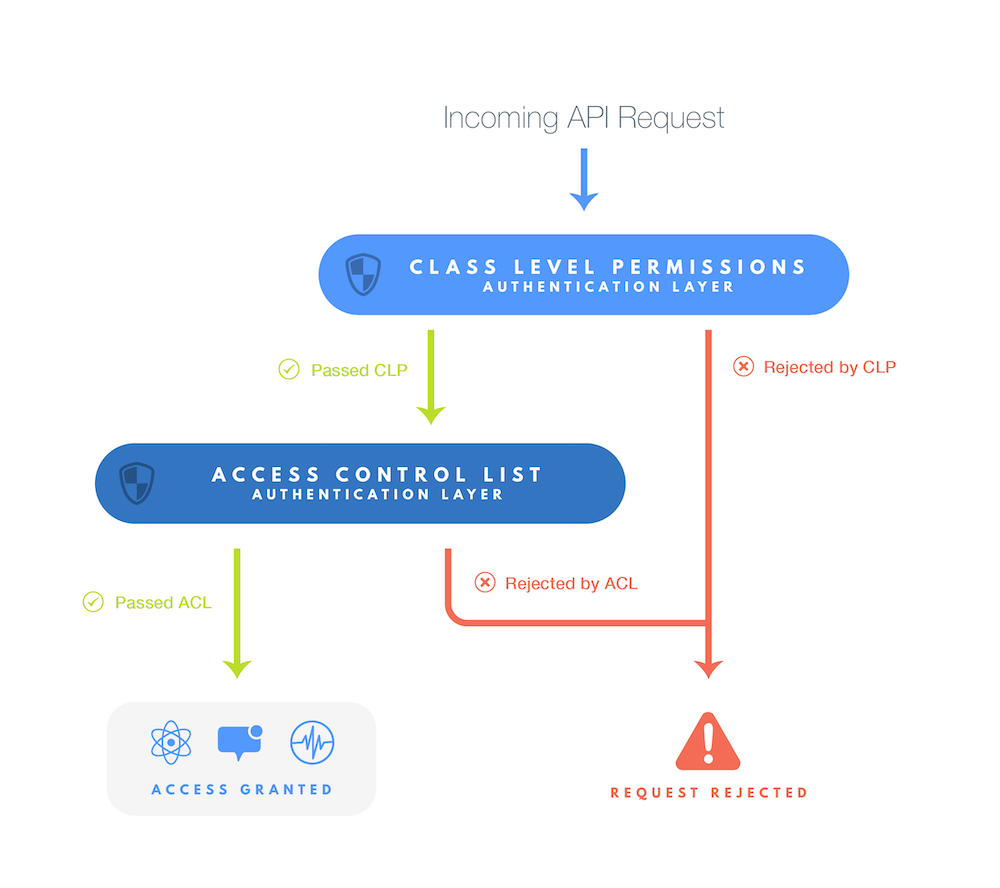

- Getting Started
- Objects
- Queries
- Live Queries
- Users
- Sessions
- Roles
- Files
- Promises
- GeoPoints
- Local Datastore
- Push Notifications
- Config
- Analytics
- Data
- Relations
- Schema
- Error Handling
- Security
- Performance
- Error Codes
Getting Started
The easiest way to integrate the Parse SDK into your JavaScript project is through the npm module. However, if you want to use a pre-compiled file, you can fetch it from npmcdn. The development version is available at https://npmcdn.com/parse/dist/parse.js, and the minified production version is at https://npmcdn.com/parse/dist/parse.min.js.
The JavaScript ecosystem is wide and incorporates a large number of platforms and execution environments. To handle this, the Parse npm module contains special versions of the SDK tailored to use in Node.js and React Native environments. Not all features make sense in all environments, so using the appropriate package will ensure that items like local storage, user sessions, and HTTP requests use appropriate dependencies.
To use the npm modules for a browser based application, include it as you normally would:
const Parse = require('parse');
For server-side applications or Node.js command line tools, include 'parse/node':
// In a node.js environment
const Parse = require('parse/node');
// ES6 Minimized
import Parse from 'parse/dist/parse.min.js';
For React Native applications, include 'parse/react-native.js':
// In a React Native application
const Parse = require('parse/react-native.js');
Additionally on React-Native / Expo environments, make sure to add the piece of code below :
//Get your favorite AsyncStorage handler with import (ES6) or require
import { AsyncStorage } from 'react-native';
//Before using the SDK...
Parse.setAsyncStorage(AsyncStorage);
To initialize your own Parse-Server with Javascript, you should replace your current initialization code with this
Parse.initialize("YOUR_APP_ID", "YOUR_JAVASCRIPT_KEY");
//javascriptKey is required only if you have it on server.
Parse.serverURL = 'http://YOUR_PARSE_SERVER:1337/parse'
⚠️ If the Masterkey needs to be provided, use the following. Please note that the master key should only be used in safe environments and never on client side ‼️
Parse.initialize("YOUR_APP_ID", "YOUR_JAVASCRIPT_KEY", "YOUR_MASTERKEY");
//javascriptKey is required only if you have it on server.
Parse.serverURL = 'http://YOUR_PARSE_SERVER:1337/parse'
Our JavaScript SDK is originally based on the popular Backbone.js framework, but it provides flexible APIs that allow it to be paired with your favorite JS libraries. Our goal is to minimize configuration and let you quickly start building your JavaScript and HTML5 app on Parse.
Our SDK supports Firefox 23+, Chrome 17+, Safari 5+, and IE 10. IE 9 is supported only for apps that are hosted with HTTPS.
Objects
Parse.Object
Storing data on Parse is built around Parse.Object. Each Parse.Object contains key-value pairs of JSON-compatible data. This data is schemaless, which means that you don’t need to specify ahead of time what keys exist on each Parse.Object. You simply set whatever key-value pairs you want, and our backend will store it.
For example, let’s say you’re tracking high scores for a game. A single Parse.Object could contain:
score: 1337, playerName: "Sean Plott", cheatMode: false
Keys must be alphanumeric strings. Values can be strings, numbers, booleans, or even arrays and dictionaries - anything that can be JSON-encoded.
Each Parse.Object is an instance of a specific subclass with a class name that you can use to distinguish different sorts of data. For example, we could call the high score object a GameScore. We recommend that you NameYourClassesLikeThis and nameYourKeysLikeThis, just to keep your code looking pretty.
To create a new subclass, use the Parse.Object.extend method. Any Parse.Query will return instances of the new class for any Parse.Object with the same classname. If you’re familiar with Backbone.Model, then you already know how to use Parse.Object. It’s designed to be created and modified in the same ways.
// Simple syntax to create a new subclass of Parse.Object.
const GameScore = Parse.Object.extend("GameScore");
// Create a new instance of that class.
const gameScore = new GameScore();
// Alternatively, you can use the typical Backbone syntax.
const Achievement = Parse.Object.extend({
className: "Achievement"
});
You can add additional methods and properties to your subclasses of Parse.Object.
// A complex subclass of Parse.Object
const Monster = Parse.Object.extend("Monster", {
// Instance methods
hasSuperHumanStrength: function () {
return this.get("strength") > 18;
},
// Instance properties go in an initialize method
initialize: function (attrs, options) {
this.sound = "Rawr"
}
}, {
// Class methods
spawn: function(strength) {
const monster = new Monster();
monster.set("strength", strength);
return monster;
}
});
const monster = Monster.spawn(200);
alert(monster.get('strength')); // Displays 200.
alert(monster.sound); // Displays Rawr.
To create a single instance of any Parse Object class, you can also use the Parse.Object constructor directly. new Parse.Object(className) will create a single Parse Object with that class name.
If you’re already using ES6 in your codebase, good news! From version 1.6.0 onwards, the JavaScript SDK is compatible with ES6 classes. You can subclass Parse.Object with the extends keyword:
class Monster extends Parse.Object {
constructor() {
// Pass the ClassName to the Parse.Object constructor
super('Monster');
// All other initialization
this.sound = 'Rawr';
}
hasSuperHumanStrength() {
return this.get('strength') > 18;
}
static spawn(strength) {
const monster = new Monster();
monster.set('strength', strength);
return monster;
}
}
However, when using extends, the SDK is not automatically aware of your subclass. If you want objects returned from queries to use your subclass of Parse.Object, you will need to register the subclass, similar to what we do on other platforms.
// After specifying the Monster subclass...
Parse.Object.registerSubclass('Monster', Monster);
Similarly, you can use extends with Parse.User.
class CustomUser extends Parse.User {
constructor(attributes) {
super(attributes);
}
doSomething() {
return 5;
}
}
Parse.Object.registerSubclass('_User', CustomUser);
In addition to queries, logIn and signUp will return the subclass CustomUser.
const customUser = new CustomUser({ foo: 'bar' });
customUser.setUsername('username');
customUser.setPassword('password');
customUser.signUp().then((user) => {
// user is an instance of CustomUser
user.doSomething(); // return 5
user.get('foo'); // return 'bar'
});
CustomUser.logIn and CustomUser.signUp will return the subclass CustomUser (SDK v2.3.0).
Saving Objects
Let’s say you want to save the GameScore described above to the Parse Cloud. The interface is similar to a Backbone.Model, including the save method:
const GameScore = Parse.Object.extend("GameScore");
const gameScore = new GameScore();
gameScore.set("score", 1337);
gameScore.set("playerName", "Sean Plott");
gameScore.set("cheatMode", false);
gameScore.save()
.then((gameScore) => {
// Execute any logic that should take place after the object is saved.
alert('New object created with objectId: ' + gameScore.id);
}, (error) => {
// Execute any logic that should take place if the save fails.
// error is a Parse.Error with an error code and message.
alert('Failed to create new object, with error code: ' + error.message);
});
After this code runs, you will probably be wondering if anything really happened. To make sure the data was saved, you can look at the Data Browser in your app on Parse. You should see something like this:
{
"objectId": "xWMyZ4YEGZ",
"score": 1337,
"playerName": "Sean Plott",
"cheatMode": false,
"createdAt":"2022-01-01T12:23:45.678Z",
"updatedAt":"2022-01-01T12:23:45.678Z"
}
There are two things to note here. You didn’t have to configure or set up a new Class called GameScore before running this code. Your Parse app lazily creates this Class for you when it first encounters it.
There are also a few fields you don’t need to specify that are provided as a convenience. objectId is a unique identifier for each saved object. createdAt and updatedAt represent the time that each object was created and last modified in the cloud. Each of these fields is filled in by Parse, so they don’t exist on a Parse.Object until a save operation has completed.
If you prefer, you can set attributes directly in your call to save instead.
const GameScore = Parse.Object.extend("GameScore");
const gameScore = new GameScore();
gameScore.save({
score: 1337,
playerName: "Sean Plott",
cheatMode: false
})
.then((gameScore) => {
// The object was saved successfully.
}, (error) => {
// The save failed.
// error is a Parse.Error with an error code and message.
});
Saving Nested Objects
You may add a Parse.Object as the value of a property in another Parse.Object. By default, when you call save() on the parent object, all nested objects will be created and/or saved as well in a batch operation. This feature makes it really easy to manage relational data as you don’t have to take care of creating the objects in any specific order.
const Child = Parse.Object.extend("Child");
const child = new Child();
const Parent = Parse.Object.extend("Parent");
const parent = new Parent();
parent.save({ child: child });
// Automatically the object Child is created on the server
// just before saving the Parent
In some scenarios, you may want to prevent this default chain save. For example, when saving a team member’s profile that points to an account owned by another user to which you don’t have write access. In this case, setting the option cascadeSave to false may be useful:
const TeamMember = Parse.Object.extend("TeamMember");
const teamMember = new TeamMember();
teamMember.set('ownerAccount', ownerAccount); // Suppose `ownerAccount` has been created earlier.
teamMember.save(null, { cascadeSave: false });
// Will save `teamMember` wihout attempting to save or modify `ownerAccount`
Cloud Code context
Requires Parse Server 4.3.0+
You may pass a context dictionary that is accessible in Cloud Code beforeSave and afterSave triggers for that Parse.Object. This is useful if you want to condition certain operations in Cloud Code triggers on ephemeral information that should not be saved with the Parse.Object in the database. The context is ephemeral in the sense that it vanishes after the Cloud Code triggers for that particular Parse.Object have executed. For example:
const TeamMember = Parse.Object.extend("TeamMember");
const teamMember = new TeamMember();
teamMember.set("team", "A");
const context = { notifyTeam: false };
await teamMember.save(null, { context: context });
The context is then accessible in Cloud Code:
Parse.Cloud.afterSave("TeamMember", async (req) => {
const notifyTeam = req.context.notifyTeam;
if (notifyTeam) {
// Notify team about new member.
}
});
Retrieving Objects
Saving data to the cloud is fun, but it’s even more fun to get that data out again. If the Parse.Object has been uploaded to the server, you can use the objectId to get it using a Parse.Query:
const GameScore = Parse.Object.extend("GameScore");
const query = new Parse.Query(GameScore);
query.get("xWMyZ4YEGZ")
.then((gameScore) => {
// The object was retrieved successfully.
}, (error) => {
// The object was not retrieved successfully.
// error is a Parse.Error with an error code and message.
});
To get the values out of the Parse.Object, use the get method.
const score = gameScore.get("score");
const playerName = gameScore.get("playerName");
const cheatMode = gameScore.get("cheatMode");
Alternatively, the attributes property of the Parse.Object can be treated as a Javascript object, and even destructured.
const { score, playerName, cheatMode } = result.attributes;
The four special reserved values are provided as properties and cannot be retrieved using the ‘get’ method nor modified with the ‘set’ method:
const objectId = gameScore.id;
const updatedAt = gameScore.updatedAt;
const createdAt = gameScore.createdAt;
const acl = gameScore.getACL();
If you need to refresh an object you already have with the latest data that
is in the Parse Cloud, you can call the fetch method like so:
myObject.fetch().then((myObject) => {
// The object was refreshed successfully.
}, (error) => {
// The object was not refreshed successfully.
// error is a Parse.Error with an error code and message.
});
If you need to check if an object has been fetched, you can call the isDataAvailable() method:
if (!myObject.isDataAvailable()) {
await myObject.fetch();
}
Updating Objects
Updating an object is simple. Just set some new data on it and call the save method. For example:
// Create the object.
const GameScore = Parse.Object.extend("GameScore");
const gameScore = new GameScore();
gameScore.set("score", 1337);
gameScore.set("playerName", "Sean Plott");
gameScore.set("cheatMode", false);
gameScore.set("skills", ["pwnage", "flying"]);
gameScore.save().then((gameScore) => {
// Now let's update it with some new data. In this case, only cheatMode and score
// will get sent to the cloud. playerName hasn't changed.
gameScore.set("cheatMode", true);
gameScore.set("score", 1338);
return gameScore.save();
});
Parse automatically figures out which data has changed so only “dirty” fields will be sent to the Parse Cloud. You don’t need to worry about squashing data that you didn’t intend to update.
Counters
The above example contains a common use case. The “score” field is a counter that we’ll need to continually update with the player’s latest score. Using the above method works but it’s cumbersome and can lead to problems if you have multiple clients trying to update the same counter.
To help with storing counter-type data, Parse provides methods that atomically increment (or decrement) any number field. So, the same update can be rewritten as:
gameScore.increment("score");
gameScore.save();
You can also increment by any amount by passing in a second argument to increment. When no amount is specified, 1 is used by default.
Arrays
To help with storing array data, there are three operations that can be used to atomically change an array associated with a given key:
addappend the given object to the end of an array field.addUniqueadd the given object only if it isn’t already contained in an array field. The position of the insert is not guaranteed.removeremove all instances of the given object from an array field.
For example, we can add items to the set-like “skills” field like so:
gameScore.addUnique("skills", "flying");
gameScore.addUnique("skills", "kungfu");
gameScore.save();
Note that it is not currently possible to atomically add and remove items from an array in the same save. You will have to call save in between every different kind of array operation.
Destroying Objects
To delete an object from the cloud:
myObject.destroy().then((myObject) => {
// The object was deleted from the Parse Cloud.
}, (error) => {
// The delete failed.
// error is a Parse.Error with an error code and message.
});
You can delete a single field from an object with the unset method:
// After this, the playerName field will be empty
myObject.unset("playerName");
// Saves the field deletion to the Parse Cloud.
// If the object's field is an array, call save() after every unset() operation.
myObject.save();
Please note that use of object.set(null) to remove a field from an object is not recommended and will result in unexpected functionality.
Relational Data
Objects may have relationships with other objects. For example, in a blogging application, a Post object may have many Comment objects. Parse supports all kind of relationships, including one-to-one, one-to-many, and many-to-many.
One-to-One and One-to-Many Relationships
One-to-one and one-to-many relationships are modeled by saving a Parse.Object as a value in the other object. For example, each Comment in a blogging app might correspond to one Post.
To create a new Post with a single Comment, you could write:
// Declare the types.
const Post = Parse.Object.extend("Post");
const Comment = Parse.Object.extend("Comment");
// Create the post
const myPost = new Post();
myPost.set("title", "I'm Hungry");
myPost.set("content", "Where should we go for lunch?");
// Create the comment
const myComment = new Comment();
myComment.set("content", "Let's do Sushirrito.");
// Add the post as a value in the comment
myComment.set("parent", myPost);
// This will save both myPost and myComment
myComment.save();
Internally, the Parse framework will store the referred-to object in just one place, to maintain consistency. You can also link objects using just their objectIds like so:
const post = new Post();
post.id = "1zEcyElZ80";
myComment.set("parent", post);
By default, when fetching an object, related Parse.Objects are not fetched. These objects’ values cannot be retrieved until they have been fetched like so:
const post = fetchedComment.get("parent");
await post.fetch();
const title = post.get("title");
Many-to-Many Relationships
Many-to-many relationships are modeled using Parse.Relation. This works similar to storing an array of Parse.Objects in a key, except that you don’t need to fetch all of the objects in a relation at once. In addition, this allows Parse.Relation to scale to many more objects than the array of Parse.Object approach. For example, a User may have many Posts that she might like. In this case, you can store the set of Posts that a User likes using relation. In order to add a Post to the “likes” list of the User, you can do:
const user = Parse.User.current();
const relation = user.relation("likes");
relation.add(post);
user.save();
You can remove a post from a Parse.Relation:
relation.remove(post);
user.save();
You can call add and remove multiple times before calling save:
relation.remove(post1);
relation.remove(post2);
user.save();
You can also pass in an array of Parse.Object to add and remove:
relation.add([post1, post2, post3]);
user.save();
By default, the list of objects in this relation are not downloaded. You can get a list of the posts that a user likes by using the Parse.Query returned by query. The code looks like:
relation.query().find({
success: function(list) {
// list contains the posts that the current user likes.
}
});
If you want only a subset of the Posts, you can add extra constraints to the Parse.Query returned by query like this:
const query = relation.query();
query.equalTo("title", "I'm Hungry");
query.find({
success:function(list) {
// list contains post liked by the current user which have the title "I'm Hungry".
}
});
For more details on Parse.Query, please look at the query portion of this guide. A Parse.Relation behaves similar to an array of Parse.Object for querying purposes, so any query you can do on an array of objects, you can do on a Parse.Relation.
Data Types
So far we’ve used values with type String, Number, and Parse.Object. Parse also supports Dates and null. You can nest JSON Objects and JSON Arrays to store more structured data within a single Parse.Object. Overall, the following types are allowed for each field in your object:
- String =>
String - Number =>
Number - Bool =>
bool - Array =>
JSON Array - Object =>
JSON Object - Date =>
Date - File =>
Parse.File - Pointer => other
Parse.Object - Relation =>
Parse.Relation - Null =>
null
Some examples:
const number = 42;
const bool = false;
const string = "the number is " + number;
const date = new Date();
const array = [string, number];
const object = { number: number, string: string };
const pointer = MyClassName.createWithoutData(objectId);
const BigObject = Parse.Object.extend("BigObject");
const bigObject = new BigObject();
bigObject.set("myNumber", number);
bigObject.set("myBool", bool);
bigObject.set("myString", string);
bigObject.set("myDate", date);
bigObject.set("myArray", array);
bigObject.set("myObject", object);
bigObject.set("anyKey", null); // this value can only be saved to an existing key
bigObject.set("myPointerKey", pointer); // shows up as Pointer <MyClassName> in the Data Browser
bigObject.save();
We do not recommend storing large pieces of binary data like images or documents on Parse.Object. We recommend you use Parse.Files to store images, documents, and other types of files. You can do so by instantiating a Parse.File object and setting it on a field. See Files for more details.
For more information about how Parse handles data, check out our documentation on Data.
Queries
We’ve already seen how a Parse.Query with get can retrieve a single Parse.Object from Parse. There are many other ways to retrieve data with Parse.Query - you can retrieve many objects at once, put conditions on the objects you wish to retrieve, and more.
Basic Queries
In many cases, get isn’t powerful enough to specify which objects you want to retrieve. Parse.Query offers different ways to retrieve a list of objects rather than just a single object.
The general pattern is to create a Parse.Query, put conditions on it, and then retrieve an Array of matching Parse.Objects using find. For example, to retrieve the scores that have a particular playerName, use the equalTo method to constrain the value for a key.
const GameScore = Parse.Object.extend("GameScore");
const query = new Parse.Query(GameScore);
query.equalTo("playerName", "Dan Stemkoski");
const results = await query.find();
alert("Successfully retrieved " + results.length + " scores.");
// Do something with the returned Parse.Object values
for (let i = 0; i < results.length; i++) {
const object = results[i];
alert(object.id + ' - ' + object.get('playerName'));
}
Query Constraints
There are several ways to put constraints on the objects found by a Parse.Query. You can filter out objects with a particular key-value pair with notEqualTo:
query.notEqualTo("playerName", "Michael Yabuti");
You can give multiple constraints, and objects will only be in the results if they match all of the constraints. In other words, it’s like an AND of constraints.
query.notEqualTo("playerName", "Michael Yabuti");
query.greaterThan("playerAge", 18);
You can limit the number of results by setting limit. By default, results are limited to 100. In the old Parse hosted backend, the maximum limit was 1,000, but Parse Server removed that constraint:
query.limit(10); // limit to at most 10 results
If you want exactly one result, a more convenient alternative may be to use first instead of using find.
const GameScore = Parse.Object.extend("GameScore");
const query = new Parse.Query(GameScore);
query.equalTo("playerEmail", "dstemkoski@example.com");
const object = await query.first();
You can skip the first results by setting skip. In the old Parse hosted backend, the maximum skip value was 10,000, but Parse Server removed that constraint. This can be useful for pagination:
query.skip(10); // skip the first 10 results
If you want to know the total number of rows in a table satisfying your query, for e.g. pagination purposes - you can use withCount.
Note: Enabling this flag will change the structure of response, see the example below.
Let’s say you have 200 rows in a table called GameScore:
const GameScore = Parse.Object.extend("GameScore");
const query = new Parse.Query(GameScore);
query.limit(25);
const results = await query.find(); // [ GameScore, GameScore, ...]
// to include count:
query.withCount();
const response = await query.find(); // { results: [ GameScore, ... ], count: 200 }
⚠️ Сount operations can be slow and expensive.
If you only want to get the count without objects - use Counting Objects.
For sortable types like numbers and strings, you can control the order in which results are returned:
// Sorts the results in ascending order by the score field
query.ascending("score");
// Sorts the results in descending order by the score field
query.descending("score");
For sortable types, you can also use comparisons in queries:
// Restricts to wins < 50
query.lessThan("wins", 50);
// Restricts to wins <= 50
query.lessThanOrEqualTo("wins", 50);
// Restricts to wins > 50
query.greaterThan("wins", 50);
// Restricts to wins >= 50
query.greaterThanOrEqualTo("wins", 50);
If you want to retrieve objects matching any of the values in a list of values, you can use containedIn, providing an array of acceptable values. This is often useful to replace multiple queries with a single query. For example, if you want to retrieve scores made by any player in a particular list:
// Finds scores from any of Jonathan, Dario, or Shawn
query.containedIn("playerName",
["Jonathan Walsh", "Dario Wunsch", "Shawn Simon"]);
If you want to retrieve objects that do not match any of several values you can use notContainedIn, providing an array of acceptable values. For example if you want to retrieve scores from players besides those in a list:
// Finds scores from anyone who is neither Jonathan, Dario, nor Shawn
query.notContainedIn("playerName",
["Jonathan Walsh", "Dario Wunsch", "Shawn Simon"]);
If you want to retrieve objects that have a particular key set, you can use exists. Conversely, if you want to retrieve objects without a particular key set, you can use doesNotExist.
// Finds objects that have the score set
query.exists("score");
// Finds objects that don't have the score set
query.doesNotExist("score");
You can use the matchesKeyInQuery method to get objects where a key matches the value of a key in a set of objects resulting from another query. For example, if you have a class containing sports teams and you store a user’s hometown in the user class, you can issue one query to find the list of users whose hometown teams have winning records. The query would look like:
const Team = Parse.Object.extend("Team");
const teamQuery = new Parse.Query(Team);
teamQuery.greaterThan("winPct", 0.5);
const userQuery = new Parse.Query(Parse.User);
userQuery.matchesKeyInQuery("hometown", "city", teamQuery);
// results has the list of users with a hometown team with a winning record
const results = await userQuery.find();
Conversely, to get objects where a key does not match the value of a key in a set of objects resulting from another query, use doesNotMatchKeyInQuery. For example, to find users whose hometown teams have losing records:
const losingUserQuery = new Parse.Query(Parse.User);
losingUserQuery.doesNotMatchKeyInQuery("hometown", "city", teamQuery);
// results has the list of users with a hometown team with a losing record
const results = await losingUserQuery.find();
To filter rows based on objectId’s from pointers in a second table, you can use dot notation:
const rolesOfTypeX = new Parse.Query('Role');
rolesOfTypeX.equalTo('type', 'x');
const groupsWithRoleX = new Parse.Query('Group');
groupsWithRoleX.matchesKeyInQuery('objectId', 'belongsTo.objectId', rolesOfTypeX);
groupsWithRoleX.find().then(function(results) {
// results has the list of groups with role x
});
You can restrict the fields returned by calling select with a list of keys. To retrieve documents that contain only the score and playerName fields (and also special built-in fields such as objectId, createdAt, and updatedAt):
const GameScore = Parse.Object.extend("GameScore");
const query = new Parse.Query(GameScore);
query.select("score", "playerName");
query.find().then(function(results) {
// each of results will only have the selected fields available.
});
Similarly, use exclude to remove undesired fields while retrieving the rest:
const GameScore = Parse.Object.extend("GameScore");
const query = new Parse.Query(GameScore);
query.exclude("playerName");
query.find().then(function(results) {
// Now each result will have all fields except `playerName`
});
The remaining fields can be fetched later by calling fetch on the returned objects:
query.first().then(function(result) {
// only the selected fields of the object will now be available here.
return result.fetch();
}).then(function(result) {
// all fields of the object will now be available here.
});
Queries on Array Values
For keys with an array type, you can find objects where the key’s array value contains 2 by:
// Find objects where the array in arrayKey contains 2.
query.equalTo("arrayKey", 2);
You can also find objects where the key’s array value contains each of the elements 2, 3, and 4 with the following:
// Find objects where the array in arrayKey contains all of the elements 2, 3, and 4.
query.containsAll("arrayKey", [2, 3, 4]);
Queries on String Values
Use startsWith to restrict to string values that start with a particular string. Similar to a MySQL LIKE operator, this is indexed so it is efficient for large datasets:
// Finds barbecue sauces that start with "Big Daddy's".
const query = new Parse.Query(BarbecueSauce);
query.startsWith("name", "Big Daddy's");
The above example will match any BarbecueSauce objects where the value in the “name” String key starts with “Big Daddy’s”. For example, both “Big Daddy’s” and “Big Daddy’s BBQ” will match, but “big daddy’s” or “BBQ Sauce: Big Daddy’s” will not.
Queries that have regular expression constraints are very expensive, especially for classes with over 100,000 records. Parse restricts how many such operations can be run on a particular app at any given time.
Full Text Search
You can use fullText for efficient search capabilities. Text indexes are automatically created for you. Your strings are turned into tokens for fast searching.
-
Note: Full Text Search can be resource intensive. Ensure the cost of using indexes is worth the benefit, see storage requirements & performance costs of text indexes..
-
Parse Server 2.5.0+
const query = new Parse.Query(BarbecueSauce);
query.fullText('name', 'bbq');
The above example will match any BarbecueSauce objects where the value in the “name” String key contains “bbq”. For example, both “Big Daddy’s BBQ”, “Big Daddy’s bbq” and “Big BBQ Daddy” will match.
// You can sort by weight / rank. ascending() and select()
const query = new Parse.Query(BarbecueSauce);
query.fullText('name', 'bbq');
query.ascending('$score');
query.select('$score');
query.find()
.then(function(results) {
// results contains a weight / rank in result.get('score')
})
.catch(function(error) {
// There was an error.
});
For Case or Diacritic Sensitive search, please use the REST API.
Relational Queries
There are several ways to issue queries for relational data. If you want to retrieve objects where a field matches a particular Parse.Object, you can use equalTo just like for other data types. For example, if each Comment has a Post object in its post field, you can fetch comments for a particular Post:
// Assume Parse.Object myPost was previously created.
const query = new Parse.Query(Comment);
query.equalTo("post", myPost);
// comments now contains the comments for myPost
const comments = await query.find();
If you want to retrieve objects where a field contains a Parse.Object that matches a different query, you can use matchesQuery. In order to find comments for posts containing images, you can do:
const Post = Parse.Object.extend("Post");
const Comment = Parse.Object.extend("Comment");
const innerQuery = new Parse.Query(Post);
innerQuery.exists("image");
const query = new Parse.Query(Comment);
query.matchesQuery("post", innerQuery);
// comments now contains the comments for posts with images.
const comments = await query.find();
If you want to retrieve objects where a field contains a Parse.Object that does not match a different query, you can use doesNotMatchQuery. In order to find comments for posts without images, you can do:
const Post = Parse.Object.extend("Post");
const Comment = Parse.Object.extend("Comment");
const innerQuery = new Parse.Query(Post);
innerQuery.exists("image");
const query = new Parse.Query(Comment);
query.doesNotMatchQuery("post", innerQuery);
// comments now contains the comments for posts without images.
const comments = await query.find();
You can also do relational queries by objectId:
const post = new Post();
post.id = "1zEcyElZ80";
query.equalTo("post", post);
In some situations, you want to return multiple types of related objects in one query. You can do this with the include method. For example, let’s say you are retrieving the last ten comments, and you want to retrieve their related posts at the same time:
const query = new Parse.Query(Comment);
// Retrieve the most recent ones
query.descending("createdAt");
// Only retrieve the last ten
query.limit(10);
// Include the post data with each comment
query.include("post");
// Comments now contains the last ten comments, and the "post" field
const comments = await query.find();
// has been populated. For example:
for (let i = 0; i < comments.length; i++) {
// This does not require a network access.
const post = comments[i].get("post");
}
You can also do multi level includes using dot notation. If you wanted to include the post for a comment and the post’s author as well you can do:
query.include(["post.author"]);
You can issue a query with multiple fields included by calling include multiple times. This functionality also works with Parse.Query helpers like first and get.
Counting Objects
Note: In the old Parse hosted backend, count queries were rate limited to a maximum of 160 requests per minute. They also returned inaccurate results for classes with more than 1,000 objects. But, Parse Server has removed both constraints and can count objects well above 1,000.
If you just need to count how many objects match a query, but you do not need to retrieve all the objects that match, you can use count instead of find. For example, to count how many games have been played by a particular player:
const GameScore = Parse.Object.extend("GameScore");
const query = new Parse.Query(GameScore);
query.equalTo("playerName", "Sean Plott");
const count = await query.count();
alert("Sean has played " + count + " games");
Compound Queries
For more complex queries you might need compound queries. A compound query is a logical combination (e. g. “and” or “or”) of sub queries.
Note that we do not support GeoPoint or non-filtering constraints (e.g. near, withinGeoBox, limit, skip, ascending/descending, include) in the subqueries of the compound query.
OR-ed query constraints
If you want to find objects that match one of several queries, you can use Parse.Query.or method to construct a query that is an OR of the queries passed in. For instance if you want to find players who either have a lot of wins or a few wins, you can do:
const lotsOfWins = new Parse.Query("Player");
lotsOfWins.greaterThan("wins", 150);
const fewWins = new Parse.Query("Player");
fewWins.lessThan("wins", 5);
const mainQuery = Parse.Query.or(lotsOfWins, fewWins);
mainQuery.find()
.then(function(results) {
// results contains a list of players that either have won a lot of games or won only a few games.
})
.catch(function(error) {
// There was an error.
});
AND-ed query constraints
If you want to find objects that match all conditions, you normally would use just one query. You can add additional constraints to the newly created Parse.Query that act as an ‘and’ operator.
const query = new Parse.Query("User");
query.greaterThan("age", 18);
query.greaterThan("friends", 0);
query.find()
.then(function(results) {
// results contains a list of users both older than 18 and having friends.
})
.catch(function(error) {
// There was an error.
});
Sometimes the world is more complex than this simple example and you may need a compound query of sub queries. You can use Parse.Query.and method to construct a query that is an AND of the queries passed in. For instance if you want to find users in the age of 16 or 18 who have either no friends or at least 2 friends, you can do:
const age16Query = new Parse.Query("User");
age16Query.equalTo("age", 16);
const age18Query = new Parse.Query("User");
age18Query.equalTo("age", 18);
const friends0Query = new Parse.Query("User");
friends0Query.equalTo("friends", 0);
const friends2Query = new Parse.Query("User");
friends2Query.greaterThan("friends", 2);
const mainQuery = Parse.Query.and(
Parse.Query.or(age16Query, age18Query),
Parse.Query.or(friends0Query, friends2Query)
);
mainQuery.find()
.then(function(results) {
// results contains a list of users in the age of 16 or 18 who have either no friends or at least 2 friends
// results: (age 16 or 18) and (0 or >2 friends)
})
.catch(function(error) {
// There was an error.
});
Aggregate
Queries can be made using aggregates, allowing you to retrieve objects over a set of input values. The results will not be Parse.Objects since you will be aggregating your own fields
- Parse Server 2.7.1+
MasterKeyis Required.
Aggregates use stages to filter results by piping results from one stage to the next.
You can create a pipeline using an Array or an Object.
The following example is a pipeline similar to distinct grouping by name field.
const pipelineObject = {
group: { objectId: '$name' }
};
const pipelineArray = [
{ group: { objectId: '$name' } }
];
For a list of available operators please refer to Mongo Aggregate Documentation.
- Note: Most operations in Mongo Aggregate Documentation will work with Parse Server, but
_iddoesn’t exist. Please replace withobjectId.
Group pipeline is similar to distinct.
You can group by a field.
// score is the field. $ before score lets the database know this is a field
const pipeline = [
{ group: { objectId: '$score' } }
];
const query = new Parse.Query("User");
query.aggregate(pipeline)
.then(function(results) {
// results contains unique score values
})
.catch(function(error) {
// There was an error.
});
You can apply collective calculations like $sum, $avg, $max, $min.
// total will be a newly created field to hold the sum of score field
const pipeline = [
{ group: { objectId: null, total: { $sum: '$score' } } }
];
const query = new Parse.Query("User");
query.aggregate(pipeline)
.then(function(results) {
// results contains sum of score field and stores it in results[0].total
})
.catch(function(error) {
// There was an error.
});
Project pipeline is similar to keys or select, add or remove existing fields.
const pipeline = [
{ project: { name: 1 } }
];
const query = new Parse.Query("User");
query.aggregate(pipeline)
.then(function(results) {
// results contains only name field
})
.catch(function(error) {
// There was an error.
});
Match pipeline is similar to equalTo.
const pipeline = [
{ match: { name: 'BBQ' } }
];
const query = new Parse.Query("User");
query.aggregate(pipeline)
.then(function(results) {
// results contains name that matches 'BBQ'
})
.catch(function(error) {
// There was an error.
});
You can match by comparison.
const pipeline = [
{ match: { score: { $gt: 15 } } }
];
const query = new Parse.Query("User");
query.aggregate(pipeline)
.then(function(results) {
// results contains score greater than 15
})
.catch(function(error) {
// There was an error.
});
Distinct
Queries can be made using distinct, allowing you find unique values for a specified field.
- Parse Server 2.7.1+
MasterKeyis required.
const query = new Parse.Query("User");
query.distinct("age")
.then(function(results) {
// results contains unique age
})
.catch(function(error) {
// There was an error.
});
You can also restrict results by using equalTo.
const query = new Parse.Query("User");
query.equalTo("name", "foo");
query.distinct("age")
.then(function(results) {
// results contains unique age where name is foo
})
.catch(function(error) {
// There was an error.
});
Read Preference
When using a MongoDB replica set, you can use the query.readPreference(readPreference, includeReadPreference, subqueryReadPreference) function to choose from which replica the objects will be retrieved. The includeReadPreference argument chooses from which replica the included pointers will be retrieved and the subqueryReadPreference argument chooses in which replica the subqueries will run. The possible values are PRIMARY (default), PRIMARY_PREFERRED, SECONDARY, SECONDARY_PREFERRED, or NEAREST. If the includeReadPreference argument is not passed, the same replica chosen for readPreference will be also used for the includes. The same rule applies for the subqueryReadPreference argument.
query.readPreference(
'SECONDARY',
'SECONDARY_PREFERRED',
'NEAREST'
);
Live Queries
Standard API
As we discussed in our LiveQuery protocol, we maintain a WebSocket connection to communicate with the Parse LiveQuery server. When used server side we use the ws package and in the browser we use window.WebSocket. We think in most cases it isn’t necessary to deal with the WebSocket connection directly. Thus, we developed a simple API to let you focus on your own business logic.
Note: Live Queries is supported only in Parse Server with JS SDK ~1.8.
Create a subscription
let query = new Parse.Query('Game');
let subscription = await query.subscribe();
- Since release
2.3.0of Parse JS SDK, thequery.subscribe()function returns aPromisethat resolves to the subscription object. Previous releases return the subscription object directly and require you to writelet subscription = query.subscribe();instead.
The subscription you get is actually an event emitter. For more information on event emitter, check here. You’ll get the LiveQuery events through this subscription. The first time you call subscribe, we’ll try to open the WebSocket connection to the LiveQuery server for you.
Event Handling
We define several types of events you’ll get through a subscription object:
Open event
subscription.on('open', () => {
console.log('subscription opened');
});
When you call query.subscribe(), we send a subscribe request to the LiveQuery server. When we get the confirmation from the LiveQuery server, this event will be emitted.
When the client loses WebSocket connection to the LiveQuery server, we’ll try to auto reconnect the LiveQuery server. If we reconnect the LiveQuery server and successfully resubscribe the ParseQuery, you’ll also get this event.
Create event
subscription.on('create', (object) => {
console.log('object created');
});
When a new ParseObject is created and it fulfills the ParseQuery you subscribe, you’ll get this event. The object is the ParseObject which was created.
Update event
subscription.on('update', (object) => {
console.log('object updated');
});
When an existing ParseObject which fulfills the ParseQuery you subscribe is updated (The ParseObject fulfills the ParseQuery before and after changes), you’ll get this event. The object is the ParseObject which was updated. Its content is the latest value of the ParseObject.
Enter event
subscription.on('enter', (object) => {
console.log('object entered');
});
When an existing ParseObject’s old value does not fulfill the ParseQuery but its new value fulfills the ParseQuery, you’ll get this event. The object is the ParseObject which enters the ParseQuery. Its content is the latest value of the ParseObject.
Leave event
subscription.on('leave', (object) => {
console.log('object left');
});
When an existing ParseObject’s old value fulfills the ParseQuery but its new value doesn’t fulfill the ParseQuery, you’ll get this event. The object is the ParseObject which leaves the ParseQuery. Its content is the latest value of the ParseObject.
Delete event
subscription.on('delete', (object) => {
console.log('object deleted');
});
When an existing ParseObject which fulfills the ParseQuery is deleted, you’ll get this event. The object is the ParseObject which is deleted.
Close event
subscription.on('close', () => {
console.log('subscription closed');
});
When the client loses the WebSocket connection to the LiveQuery server and we can’t get anymore events, you’ll get this event.
Unsubscribe
subscription.unsubscribe();
If you would like to stop receiving events from a ParseQuery, you can just unsubscribe the subscription. After that, you won’t get any events from the subscription object.
Close
Parse.LiveQuery.close();
When you are done using LiveQuery, you can call Parse.LiveQuery.close(). This function will close the WebSocket connection to the LiveQuery server, cancel the auto reconnect, and unsubscribe all subscriptions based on it. If you call query.subscribe() after this, we will create a new WebSocket connection to the LiveQuery server.
Setup server URL
Parse.liveQueryServerURL = 'ws://XXXX'
Most of the time you do not need to manually set this. If you have setup your Parse.serverURL, we will try to extract the hostname and use ws://hostname as the default liveQueryServerURL. However, if you want to define your own liveQueryServerURL or use a different protocol such as wss, you should set it by yourself.
WebSocket Status
We expose three events to help you monitor the status of the WebSocket connection:
Open event
Parse.LiveQuery.on('open', () => {
console.log('socket connection established');
});
When we establish the WebSocket connection to the LiveQuery server, you’ll get this event.
Close event
Parse.LiveQuery.on('close', () => {
console.log('socket connection closed');
});
When we lose the WebSocket connection to the LiveQuery server, you’ll get this event.
Error event
Parse.LiveQuery.on('error', (error) => {
console.log(error);
});
When some network error or LiveQuery server error happens, you’ll get this event.
Advanced API
In our standard API, we manage a global WebSocket connection for you, which is suitable for most cases. However, for some cases, like when you have multiple LiveQuery servers and want to connect to all of them, a single WebSocket connection isn’t enough. We’ve exposed the LiveQueryClient for these scenarios.
LiveQueryClient
A LiveQueryClient is a wrapper of a standard WebSocket client. We add several useful methods to help you connect/disconnect to LiveQueryServer and subscribe/unsubscribe a ParseQuery easily.
Initialize
let Parse = require('parse/node');
let LiveQueryClient = Parse.LiveQueryClient;
let client = new LiveQueryClient({
applicationId: '',
serverURL: '',
javascriptKey: '',
masterKey: ''
});
applicationIdis mandatory, it’s theapplicationIdof your Parse appserverURLis mandatory, it’s the URL of your LiveQuery serverjavascriptKeyandmasterKeyare optional, they are used for verifying theLiveQueryClientwhen it tries to connect to the LiveQuery server. If you set them, they should match your Parse app. You can check LiveQuery protocol here for more details.
Open
client.open();
After you call this, the LiveQueryClient will try to send a connect request to the LiveQuery server.
Subscribe
let query = new Parse.Query('Game');
let subscription = client.subscribe(query, sessionToken);
queryis mandatory, it is theParseQueryyou want to subscribesessionTokenis optional, if you provide thesessionToken, when the LiveQuery server getsParseObject’s updates from parse server, it’ll try to check whether thesessionTokenfulfills theParseObject’s ACL. The LiveQuery server will only send updates to clients whose sessionToken is fit for theParseObject’s ACL. You can check the LiveQuery protocol here for more details. Thesubscriptionyou get is the samesubscriptionyou get from our Standard API. You can check our Standard API about how to use thesubscriptionto get events.
Unsubscribe
client.unsubscribe(subscription);
subscriptionis mandatory, it’s the subscription you want to unsubscribe from. After you call this, you won’t get any events from the subscription object.
Close
client.close();
This function will close the WebSocket connection to this LiveQueryClient, cancel the auto reconnect, and unsubscribe all subscriptions based on it.
Event Handling
We expose three events to help you monitor the status of the LiveQueryClient.
Open event
client.on('open', () => {
console.log('connection opened');
});
When we establish the WebSocket connection to the LiveQuery server, you’ll get this event.
Close event
client.on('close', () => {
console.log('connection closed');
});
When we lose the WebSocket connection to the LiveQuery server, you’ll get this event.
Error event
client.on('error', (error) => {
console.log('connection error');
});
When some network error or LiveQuery server error happens, you’ll get this event.
Reconnect
Since the whole LiveQuery feature relies on the WebSocket connection to the LiveQuery server, we always try to maintain an open WebSocket connection. Thus, when we find we lose the connection to the LiveQuery server, we will try to auto reconnect. We do exponential back off under the hood. However, if the WebSocket connection is closed due to Parse.LiveQuery.close() or client.close(), we’ll cancel the auto reconnect.
SessionToken
We send sessionToken to the LiveQuery server when you subscribe to a ParseQuery. For the standard API, we use the sessionToken of the current user by default. For the advanced API, you can use any sessionToken when you subscribe to a ParseQuery. An important thing to be aware of is when you log out or the sessionToken you are using is invalid, you should unsubscribe the subscription and subscribe to the ParseQuery again. Otherwise you may face a security issue since you’ll get events which shouldn’t be sent to you.
Users
At the core of many apps, there is a notion of user accounts that lets users access their information in a secure manner. We provide a specialized user class called Parse.User that automatically handles much of the functionality required for user account management.
With this class, you’ll be able to add user account functionality in your app.
Parse.User is a subclass of Parse.Object, and has all the same features, such as flexible schema, automatic persistence, and a key value interface. All the methods that are on Parse.Object also exist in Parse.User. The difference is that Parse.User has some special additions specific to user accounts.
Parse.User Properties
Parse.User has several values that set it apart from Parse.Object:
- username: The username for the user (required).
- password: The password for the user (required on signup).
- email: The email address for the user (optional).
We’ll go through each of these in detail as we run through the various use cases for users.
Signing Up
The first thing your app will do is probably ask the user to sign up. The following code illustrates a typical sign up:
const user = new Parse.User();
user.set("username", "my name");
user.set("password", "my pass");
user.set("email", "email@example.com");
// other fields can be set just like with Parse.Object
user.set("phone", "415-392-0202");
try {
await user.signUp();
// Hooray! Let them use the app now.
} catch (error) {
// Show the error message somewhere and let the user try again.
alert("Error: " + error.code + " " + error.message);
}
This call will asynchronously create a new user in your Parse App. Before it does this, it also checks to make sure that both the username and email are unique. Also, it securely hashes the password in the cloud using bcrypt. We never store passwords in plaintext, nor will we ever transmit passwords back to the client in plaintext.
Note that we used the signUp method, not the save method. New Parse.Users should always be created using the signUp method. Subsequent updates to a user can be done by calling save.
If a signup isn’t successful, you should read the error object that is returned. The most likely case is that the username or email has already been taken by another user. You should clearly communicate this to your users, and ask them try a different username.
You are free to use an email address as the username. Simply ask your users to enter their email, but fill it in the username property — Parse.User will work as normal. We’ll go over how this is handled in the reset password section.
Logging In
Of course, after you allow users to sign up, you need to let them log in to their account in the future. To do this, you can use the class method logIn.
const user = await Parse.User.logIn("myname", "mypass");
// Do stuff after successful login.
By default, the SDK uses the GET HTTP method. If you would like to override this and use a POST HTTP method instead, you may pass an optional Boolean property in the options argument with the key usePost.
const user = await Parse.User.logIn("myname", "mypass", { usePost: true });
// Do stuff after successful login.
Available with SDK version 2.17.0 and later
Verifying Emails
Enabling email verification in an application’s settings allows the application to reserve part of its experience for users with confirmed email addresses. Email verification adds the emailVerified key to the Parse.User object. When a Parse.User’s email is set or modified, emailVerified is set to false. Parse then emails the user a link which will set emailVerified to true.
There are three emailVerified states to consider:
true- the user confirmed his or her email address by clicking on the link Parse emailed them.Parse.Userscan never have atruevalue when the user account is first created.false- at the time theParse.Userobject was last refreshed, the user had not confirmed his or her email address. IfemailVerifiedisfalse, consider callingfetchon theParse.User.- missing - the
Parse.Userwas created when email verification was off or theParse.Userdoes not have anemail.
Current User
It would be bothersome if the user had to log in every time they open your app. You can avoid this by using the cached current Parse.User object.
Please note that this functionality is disabled by default on Node.js environments (such as React Native) to discourage stateful usages on server-side configurations. To bypass this behavior on this particular use case, call once Parse.User.enableUnsafeCurrentUser() right before using any cached-user related functionalities.
Whenever you use any signup or login methods, the user is cached in localStorage, or in any storage you configured via the Parse.setAsyncStorage method. You can treat this cache as a session, and automatically assume the user is logged in:
const currentUser = Parse.User.current();
if (currentUser) {
// do stuff with the user
} else {
// show the signup or login page
}
When using a platform with an async storage system you should call currentAsync() instead.
Parse.User.currentAsync().then(function(user) {
// do stuff with your user
});
You can clear the current user by logging them out:
Parse.User.logOut().then(() => {
const currentUser = Parse.User.current(); // this will now be null
});
Setting the Current User
If you’ve created your own authentication routines, or otherwise logged in a user on the server side, you can now pass the session token to the client and use the become method. This method will ensure the session token is valid before setting the current user.
Parse.User.become("session-token-here").then(function (user) {
// The current user is now set to user.
}, function (error) {
// The token could not be validated.
});
Security For User Objects
The Parse.User class is secured by default. Data stored in a Parse.User can only be modified by that user. By default, the data can still be read by any client. Thus, some Parse.User objects are authenticated and can be modified, whereas others are read-only.
Specifically, you are not able to invoke any of the save or delete methods unless the Parse.User was obtained using an authenticated method, like logIn or signUp. This ensures that only the user can alter their own data.
The following illustrates this security policy:
const user = await Parse.User.logIn("my_username", "my_password");
user.set("username", "my_new_username");
await user.save();
// This succeeds, since the user was authenticated on the device
// Get the user from a non-authenticated method
const query = new Parse.Query(Parse.User);
const userAgain = await query.get(user.objectId);
userAgain.set("username", "another_username");
await userAgain.save().catch(error => {
// This will error, since the Parse.User is not authenticated
});
The Parse.User obtained from Parse.User.current() will always be authenticated.
If you need to check if a Parse.User is authenticated, you can invoke the authenticated method. You do not need to check authenticated with Parse.User objects that are obtained via an authenticated method.
Encrypting Current User
Often you may want to be more careful with user information stored in the browser, if this is the case you can encrypt the current user object:
Parse.enableEncryptedUser();
Parse.secret = 'my Secrey Key';
- It’s important to remember that this function will not work if
Parse.secretis not set. - Also note that this only works in the browser.
Now the record in Local Storage looks like a random string and only can be read using Parse.User.current()
You can check if this feature is enabled with the function Parse.isEncryptedUserEnabled().
Security For Other Objects
The same security model that applies to the Parse.User can be applied to other objects. For any object, you can specify which users are allowed to read the object, and which users are allowed to modify an object. To support this type of security, each object has an access control list, implemented by the Parse.ACL class.
The simplest way to use a Parse.ACL is to specify that an object may only be read or written by a single user. This is done by initializing a Parse.ACL with a Parse.User: new Parse.ACL(user) generates a Parse.ACL that limits access to that user. An object’s ACL is updated when the object is saved, like any other property. Thus, to create a private note that can only be accessed by the current user:
const Note = Parse.Object.extend("Note");
const privateNote = new Note();
privateNote.set("content", "This note is private!");
privateNote.setACL(new Parse.ACL(Parse.User.current()));
privateNote.save();
This note will then only be accessible to the current user, although it will be accessible to any device where that user is signed in. This functionality is useful for applications where you want to enable access to user data across multiple devices, like a personal todo list.
Permissions can also be granted on a per-user basis. You can add permissions individually to a Parse.ACL using setReadAccess and setWriteAccess. For example, let’s say you have a message that will be sent to a group of several users, where each of them have the rights to read and delete that message:
const Message = Parse.Object.extend("Message");
const groupMessage = new Message();
const groupACL = new Parse.ACL();
// userList is an array with the users we are sending this message to.
for (let i = 0; i < userList.length; i++) {
groupACL.setReadAccess(userList[i], true);
groupACL.setWriteAccess(userList[i], true);
}
groupMessage.setACL(groupACL);
groupMessage.save();
You can also grant permissions to all users at once using setPublicReadAccess and setPublicWriteAccess. This allows patterns like posting comments on a message board. For example, to create a post that can only be edited by its author, but can be read by anyone:
const publicPost = new Post();
const postACL = new Parse.ACL(Parse.User.current());
postACL.setPublicReadAccess(true);
publicPost.setACL(postACL);
publicPost.save();
Operations that are forbidden, such as deleting an object that you do not have write access to, result in a Parse.Error.OBJECT_NOT_FOUND error code. For security purposes, this prevents clients from distinguishing which object ids exist but are secured, versus which object ids do not exist at all.
Resetting Passwords
It’s a fact that as soon as you introduce passwords into a system, users will forget them. In such cases, our library provides a way to let them securely reset their password.
To kick off the password reset flow, ask the user for their email address, and call:
Parse.User.requestPasswordReset("email@example.com")
.then(() => {
// Password reset request was sent successfully
}).catch((error) => {
// Show the error message somewhere
alert("Error: " + error.code + " " + error.message);
});
This will attempt to match the given email with the user’s email or username field, and will send them a password reset email. By doing this, you can opt to have users use their email as their username, or you can collect it separately and store it in the email field.
The flow for password reset is as follows:
- User requests that their password be reset by typing in their email.
- Parse sends an email to their address, with a special password reset link.
- User clicks on the reset link, and is directed to a special Parse page that will allow them type in a new password.
- User types in a new password. Their password has now been reset to a value they specify.
Note that the messaging in this flow will reference your app by the name that you specified when you created this app on Parse.
Querying
To query for users, you can simple create a new Parse.Query for Parse.Users:
const query = new Parse.Query(Parse.User);
query.equalTo("gender", "female"); // find all the women
const women = await query.find();
Associations
Associations involving a Parse.User work right of the box. For example, let’s say you’re making a blogging app. To store a new post for a user and retrieve all their posts:
const user = Parse.User.current();
// Make a new post
const Post = Parse.Object.extend("Post");
const post = new Post();
post.set("title", "My New Post");
post.set("body", "This is some great content.");
post.set("user", user);
await post.save();
// Find all posts by the current user
const query = new Parse.Query(Post);
query.equalTo("user", user);
const userPosts = await query.find();
// userPosts contains all of the posts by the current user.
});
Facebook Users
Parse provides an easy way to integrate Facebook with your application. The Parse.FacebookUtils class integrates Parse.User and the Facebook Javascript SDK to make linking your users to their Facebook identities easy.
Using our Facebook integration, you can associate an authenticated Facebook user with a Parse.User. With just a few lines of code, you’ll be able to provide a “log in with Facebook” option in your app, and be able to save their data to Parse.
Setting up Facebook
To start using Facebook with Parse, you need to:
- Create a Facebook Developer account.
- Create an app.
- In your app Dashboard, add a product -> Facebook Login.
- Add appIds to Parse Server auth configuration or pass
facebookAppIdsinto configuration
<script>
// Initialize Parse
Parse.initialize("$PARSE_APPLICATION_ID", "$PARSE_JAVASCRIPT_KEY");
Parse.serverURL = 'http://YOUR_PARSE_SERVER:1337/parse';
window.fbAsyncInit = function() {
Parse.FacebookUtils.init({
appId : '{facebook-app-id}', // Facebook App ID
status : true, // check Facebook Login status
cookie : true, // enable cookies to allow Parse to access the session
xfbml : true, // initialize Facebook social plugins on the page
version : 'v2.3' // point to the latest Facebook Graph API version
});
// Run code after the Facebook SDK is loaded.
// ...
};
// Load Facebook SDK
(function(d, s, id){
var js, fjs = d.getElementsByTagName(s)[0];
if (d.getElementById(id)) {return;}
js = d.createElement(s); js.id = id;
js.src = "//connect.facebook.net/en_US/sdk.js";
fjs.parentNode.insertBefore(js, fjs);
}(document, 'script', 'facebook-jssdk'));
</script>
The function assigned to fbAsyncInit is run as soon as the Facebook JavaScript SDK has completed loading. Any code that you want to run after the Facebook JavaScript SDK is loaded should be placed within this function and after the call to Parse.FacebookUtils.init().
If you encounter any issues that are Facebook-related, a good resource is the official getting started guide from Facebook.
There are two main ways to use Facebook with your Parse users: (1) logging in as a Facebook user and creating a Parse.User, or (2) linking Facebook to an existing Parse.User.
Login & Signup
Parse.FacebookUtils provides a way to allow your Parse.Users to log in or sign up through Facebook. This is accomplished using the logIn() method:
try {
const users = await Parse.FacebookUtils.logIn();
if (!user.existed()) {
alert("User signed up and logged in through Facebook!");
} else {
alert("User logged in through Facebook!");
}
} catch(error) {
alert("User cancelled the Facebook login or did not fully authorize.");
}
When this code is run, the following happens:
- The user is shown the Facebook login dialog.
- The user authenticates via Facebook, and your app receives a callback.
- Our SDK receives the Facebook data and saves it to a
Parse.User. If it’s a new user based on the Facebook ID, then that user is created.
You may optionally provide a comma-delimited string that specifies what permissions your app requires from the Facebook user. For example:
const user = await Parse.FacebookUtils.logIn("user_likes,email");
Linking
If you want to associate an existing Parse.User to a Facebook account, you can link it like so:
if (!Parse.FacebookUtils.isLinked(user)) {
try {
await Parse.FacebookUtils.link(user);
alert("Woohoo, user logged in with Facebook!");
} catch(error) {}
alert("User cancelled the Facebook login or ddid not fully authorize.");
});
}
The steps that happen when linking are very similar to log in. The difference is that on successful login, the existing Parse.User is updated with the Facebook information. Future logins via Facebook will now log the user into their existing account.
For advanced API: If you have a Facebook access_token, you can use linkWith().
If you want to unlink Facebook from a user, simply do this:
await Parse.FacebookUtils.unlink(user);
alert("The user is no longer associated with their Facebook account.");
Facebook SDK and Parse
The Facebook Javascript SDK provides a main FB object that is the starting point for many of the interactions with Facebook’s API. You can read more about their SDK here.
Facebook login using the Parse SDK requires that the Facebook SDK already be loaded before calling Parse.FacebookUtils.init().
Our library manages the FB object for you. The FB singleton is synchronized with the current user by default, so any methods you call on it will be acting on the Facebook user associated with the current Parse.User. Calling FB.login() or FB.logOut() explicitly will cause the Parse.User and FB object to fall out of synchronization, and is not recommended.
Linking Users
Parse allows you to link your users with 3rd party authentication, enabling your users to sign up or log into your application using their existing identities. This is accomplished through linkWith method by providing authentication data for the service you wish to link to a user in the authData field. Once your user is associated with a service, the authData for the service will be stored with the user and is retrievable by logging in.
authData is a JSON object with keys for each linked service containing the data below. The authData object is required to at least have a key named id, which is used to identify the user on subsequent login attempts with linked account data.
_linkWithhas been deprecated since version 2.9.0, see _linkWith
Signing Up and Logging In
Signing a user up with a linked service and logging them in with that service uses the same linkWith() method, in which the authData for the user is specified.
const myAuthData = {
id: '12345678' // Required field. Used to uniquely identify the linked account.
};
const user = new Parse.User();
await user.linkWith('providerName', { authData: myAuthData });
Parse then verifies that the provided authData is valid and checks to see if a user is already associated with this data. If so, it returns a status code of 200 OK and the details (including a sessionToken for the user):
Status: 200 OK
Location: https://YOUR.PARSE-SERVER.HERE/parse/users/uMz0YZeAqc
With a response body like:
{
"username": "Parse",
"createdAt": "2022-01-01T12:23:45.678Z",
"updatedAt": "2022-01-01T12:23:45.678Z",
"objectId": "uMz0YZeAqc",
"sessionToken": "r:samplei3l83eerhnln0ecxgy5",
"authData": {
"providerName": {
"id": "12345678",
}
}
}
If the user has never been linked with this account, you will instead receive a status code of 201 Created, indicating that a new user was created:
Status: 201 Created
Location: https://YOUR.PARSE-SERVER.HERE/parse/users/uMz0YZeAqc
The body of the response will contain the objectId, createdAt, sessionToken, and an automatically-generated unique username. For example:
{
"username": "iwz8sna7sug28v4eyu7t89fij",
"createdAt": "2022-01-01T12:23:45.678Z",
"objectId": "uMz0YZeAqc",
"sessionToken": "r:samplei3l83eerhnln0ecxgy5"
}
Linking un-authenticated users
To create a link to an un-authenticated user (for example in cloud code), options can be passed to linkWith() to either use the masterKey or pass a sessionToken.
const myAuthData = {
id: xzx5tt123, // The id key is required in the authData-object. Otherwise Parse Server will throw the Error 252 'This authentication method is unsupported'.
access: token
}
const user = await Parse.Query(Parse.User).get(userId);
await user.linkWith(
'providerName',
{ authData: myAuthData },
{ useMasterKey: true }
);
On rest, web, mobile, or TV clients, users can then login using the CustomAdapter by passing myAuthData:
const loggedIn = await Parse.User.logInWith('CustomAdapter', { authData: myAuthData});
Custom Authentication Module
Parse Server supports many 3rd Party Authenications.
It is possible to linkWith any 3rd Party Authentication by creating a custom authentication module. A custom authentication module normally consists of a client-side AuthProvider object and a back-end AuthAdapter. The client-side object should implement the AuthProvider interface. The backend AuthAdapter should implement the the functions validateAuthData and validateAppId, check out this AuthAdapter example.
When calling the linkWith function without an authData object the client side authenticate-method from the provider object will be called. In the other case the authData object will be sent directly to Parse Server for authentication using the backend module.
Note: The following is a minimal example implementing AuthProvider client-side and AuthAdapter on the backend.
A minimal CustomAuth.js module in the backend:
// Don't require or import parse-server in this module.
// See this issue: https://github.com/parse-community/parse-server/issues/6467
function validateAuthData(authData, options) {
return Promise.resolve({})
}
function validateAppId(appIds, authData, options) {
return Promise.resolve({});
}
module.exports = {
validateAppId,
validateAuthData,
};
Configure the server to make the CustomAuth available:
const CustomAuth = require('./CustomAuth');
const api = new ParseServer({
...
auth: {
myAuth: {
module: CustomAuth,
option1: 'hello',
option2: 'world',
}
}
...
});
...
app.use('/parse', api);
Use the CustomAuth:
const provider = {
authenticate: (options) => {
// Some code to get retrieve authData
// If retrieved valid authData, call success function with the data
options.success(this, {
id: 1234
});
// You can also handle error
// options.error(this, {});
},
restoreAuthentication() {
return true;
},
getAuthType() {
return 'myAuth';
},
getAuthData() {
return {
authData: {
id: 1234,
},
};
},
};
// Must register before linking
Parse.User._registerAuthenticationProvider(provider);
const user = new Parse.User();
user.setUsername('Alice');
user.setPassword('sekrit');
await user.signUp();
await user.linkWith(provider.getAuthType(), provider.getAuthData());
user._isLinked(provider); // true
// Unlink
await user._unlinkFrom(provider.getAuthType());
Sessions
Sessions represent an instance of a user logged into a device. Sessions are automatically created when users log in or sign up. They are automatically deleted when users log out. There is one distinct Session object for each user-installation pair; if a user issues a login request from a device they’re already logged into, that user’s previous Session object for that Installation is automatically deleted. Session objects are stored on Parse in the Session class, and you can view them on the Parse Dashboard Data Browser. We provide a set of APIs to manage Session objects in your app.
Session is a subclass of a Parse Object, so you can query, update, and delete sessions in the same way that you manipulate normal objects on Parse. Because Parse Server automatically creates sessions when you log in or sign up users, you should not manually create Session objects unless you are building an IoT app (e.g. Arduino or Embedded C). Deleting a Session will log the user out of the device that is currently using this session’s token.
Unlike other Parse objects, the Session class does not have Cloud Code triggers. So you cannot register a beforeSave or afterSave handler for the Session class.
Session Properties
The Session object has these special fields:
sessionToken(readonly): String token for authentication on Parse API requests. In the response ofSessionqueries, only your currentSessionobject will contain a session token.user: (readonly) Pointer to theUserobject that this session is for.createdWith(readonly): Information about how this session was created (e.g.{ "action": "login", "authProvider": "password"}).actioncould have values:login,signup,create, orupgrade. Thecreateaction is when the developer manually creates the session by saving aSessionobject. Theupgradeaction is when the user is upgraded to revocable session from a legacy session token.authProvidercould have values:password,anonymous,facebook, ortwitter.
expiresAt(readonly): Approximate UTC date when thisSessionobject will be automatically deleted. You can configure session expiration settings (either 1-year inactivity expiration or no expiration) in your app’s Parse Dashboard settings page.installationId(can be set only once): String referring to theInstallationwhere the session is logged in from. For Parse SDKs, this field will be automatically set when users log in or sign up. All special fields exceptinstallationIdcan only be set automatically by Parse Server. You can add custom fields ontoSessionobjects, but please keep in mind that any logged-in device (with session token) can read other sessions that belong to the same user (unless you disable Class-Level Permissions, see below).
Handling Invalid Session Token Error
With revocable sessions, your current session token could become invalid if its corresponding Session object is deleted from your Parse Server. This could happen if you implement a Session Manager UI that lets users log out of other devices, or if you manually delete the session via Cloud Code, REST API, or Data Browser. Sessions could also be deleted due to automatic expiration (if configured in app settings). When a device’s session token no longer corresponds to a Session object on your Parse Server, all API requests from that device will fail with “Error 209: invalid session token”.
To handle this error, we recommend writing a global utility function that is called by all of your Parse request error callbacks. You can then handle the “invalid session token” error in this global function. You should prompt the user to login again so that they can obtain a new session token. This code could look like this:
function handleParseError(err) {
switch (err.code) {
case Parse.Error.INVALID_SESSION_TOKEN:
Parse.User.logOut();
... // If web browser, render a log in screen
... // If Express.js, redirect the user to the log in route
break;
... // Other Parse API errors that you want to explicitly handle
}
}
// For each API request, call the global error handler
query.find().then(function() {
...
}, function(err) {
handleParseError(err);
});
Session Security
Session objects can only be accessed by the user specified in the user field. All Session objects have an ACL that is read and write by that user only. You cannot change this ACL. This means querying for sessions will only return objects that match the current logged-in user.
When you log in a user via a User login method, Parse will automatically create a new unrestricted Session object in your Parse Server. Same for signups and Facebook/Twitter logins.
You can configure Class-Level Permissions (CLPs) for the Session class just like other classes on Parse. CLPs restrict reading/writing of sessions via the Session API, but do not restrict Parse Server’s automatic session creation/deletion when users log in, sign up, and log out. We recommend that you disable all CLPs not needed by your app. Here are some common use cases for Session CLPs:
- Find, Delete — Useful for building a UI screen that allows users to see their active session on all devices, and log out of sessions on other devices. If your app does not have this feature, you should disable these permissions.
- Create — Useful for apps that provision user sessions for other devices from the phone app. You should disable this permission when building apps for mobile and web. For IoT apps, you should check whether your IoT device actually needs to access user-specific data. If not, then your IoT device does not need a user session, and you should disable this permission.
- Get, Update, Add Field — Unless you need these operations, you should disable these permissions.
Roles
As your app grows in scope and user-base, you may find yourself needing more coarse-grained control over access to pieces of your data than user-linked ACLs can provide. To address this requirement, Parse supports a form of Role-based Access Control. Roles provide a logical way of grouping users with common access privileges to your Parse data. Roles are named objects that contain users and other roles. Any permission granted to a role is implicitly granted to its users as well as to the users of any roles that it contains.
For example, in your application with curated content, you may have a number of users that are considered “Moderators” and can modify and delete content created by other users. You may also have a set of users that are “Administrators” and are allowed all of the same privileges as Moderators, but can also modify the global settings for the application. By adding users to these roles, you can ensure that new users can be made moderators or administrators, without having to manually grant permission to every resource for each user.
We provide a specialized class called Parse.Role that represents these role objects in your client code. Parse.Role is a subclass of Parse.Object, and has all of the same features, such as a flexible schema, automatic persistence, and a key value interface. All the methods that are on Parse.Object also exist on Parse.Role. The difference is that Parse.Role has some additions specific to management of roles.
Parse.Role Properties
Parse.Role has several properties that set it apart from Parse.Object:
- name: The name for the role. This value is required, and can only be set once as a role is being created. The name must consist of alphanumeric characters, spaces, -, or _. This name will be used to identify the Role without needing its objectId.
- users: A relation to the set of users that will inherit permissions granted to the containing role.
- roles: A relation to the set of roles whose users and roles will inherit permissions granted to the containing role.
Security for Role Objects
The Parse.Role uses the same security scheme (ACLs) as all other objects on Parse, except that it requires an ACL to be set explicitly. Generally, only users with greatly elevated privileges (e.g. a master user or Administrator) should be able to create or modify a Role, so you should define its ACLs accordingly. Remember, if you give write-access to a Parse.Role to a user, that user can add other users to the role, or even delete the role altogether.
To create a new Parse.Role, you would write:
// By specifying no write privileges for the ACL, we can ensure the role cannot be altered.
const roleACL = new Parse.ACL();
roleACL.setPublicReadAccess(true);
const role = new Parse.Role("Administrator", roleACL);
role.save();
You can add users and roles that should inherit your new role’s permissions through the “users” and “roles” relations on Parse.Role:
const role = new Parse.Role(roleName, roleACL);
role.getUsers().add(usersToAddToRole);
role.getRoles().add(rolesToAddToRole);
role.save();
Take great care when assigning ACLs to your roles so that they can only be modified by those who should have permissions to modify them.
Role Based Security for Other Objects
Now that you have created a set of roles for use in your application, you can use them with ACLs to define the privileges that their users will receive. Each Parse.Object can specify a Parse.ACL, which provides an access control list that indicates which users and roles should be granted read or write access to the object.
Giving a role read or write permission to an object is straightforward. You can either use the Parse.Role:
const moderators = /* Query for some Parse.Role */;
const wallPost = new Parse.Object("WallPost");
const postACL = new Parse.ACL();
postACL.setRoleWriteAccess(moderators, true);
wallPost.setACL(postACL);
wallPost.save();
You can avoid querying for a role by specifying its name for the ACL:
const wallPost = new Parse.Object("WallPost");
const postACL = new Parse.ACL();
postACL.setRoleWriteAccess("Moderators", true);
wallPost.setACL(postACL);
wallPost.save();
Role Hierarchy
As described above, one role can contain another, establishing a parent-child relationship between the two roles. The consequence of this relationship is that any permission granted to the parent role is implicitly granted to all of its child roles.
These types of relationships are commonly found in applications with user-managed content, such as forums. Some small subset of users are “Administrators”, with the highest level of access to tweaking the application’s settings, creating new forums, setting global messages, and so on. Another set of users are “Moderators”, who are responsible for ensuring that the content created by users remains appropriate. Any user with Administrator privileges should also be granted the permissions of any Moderator. To establish this relationship, you would make your “Administrators” role a child role of “Moderators”, like this:
const administrators = /* Your "Administrators" role */;
const moderators = /* Your "Moderators" role */;
moderators.getRoles().add(administrators);
moderators.save();
Files
Creating a Parse.File
Parse.File lets you store application files in the cloud that would otherwise be too large or cumbersome to fit into a regular Parse.Object. The most common use case is storing images, but you can also use it for documents, videos, music, and any other binary data.
Getting started with Parse.File is easy. There are a couple of ways to create a file. The first is with a base64-encoded String.
const base64 = "V29ya2luZyBhdCBQYXJzZSBpcyBncmVhdCE=";
const file = new Parse.File("myfile.txt", { base64: base64 });
Alternatively, you can create a file from an array of byte values:
const bytes = [ 0xBE, 0xEF, 0xCA, 0xFE ];
const file = new Parse.File("myfile.txt", bytes);
Parse will auto-detect the type of file you are uploading based on the file extension, but you can specify the Content-Type with a third parameter:
const file = new Parse.File("myfile.zzz", fileData, "image/png");
Client Side
In a browser, you’ll want to use an html form with a file upload control. To do this, create a file input tag which allows the user to pick a file from their local drive to upload:
<input type="file" id="profilePhotoFileUpload">
Then, in a click handler or other function, get a reference to that file:
const fileUploadControl = $("#profilePhotoFileUpload")[0];
if (fileUploadControl.files.length > 0) {
const file = fileUploadControl.files[0];
const name = "photo.jpg";
const parseFile = new Parse.File(name, file);
}
Notice in this example that we give the file a name of photo.jpg. There’s two things to note here:
- You don’t need to worry about filename collisions. Each upload gets a unique identifier so there’s no problem with uploading multiple files named
photo.jpg. - It’s important that you give a name to the file that has a file extension. This lets Parse figure out the file type and handle it accordingly. So, if you’re storing PNG images, make sure your filename ends with
.png.
Next you’ll want to save the file up to the cloud. As with Parse.Object, there are many variants of the save method you can use depending on what sort of callback and error handling suits you.
parseFile.save().then(function() {
// The file has been saved to Parse.
}, function(error) {
// The file either could not be read, or could not be saved to Parse.
});
Server Side
In Cloud Code you can fetch images or other files and store them as a Parse.File.
const request = require('request-promise');
const Parse = require('parse/node');
....
const options = {
uri: 'https://bit.ly/2zD8fgm',
resolveWithFullResponse: true,
encoding: null, // <-- this is important for binary data like images.
};
request(options)
.then((response) => {
const data = Array.from(Buffer.from(response.body, 'binary'));
const contentType = response.headers['content-type'];
const file = new Parse.File('logo', data, contentType);
return file.save();
})
.then((file => console.log(file.url())))
.catch(console.error);
Embedding files in other objects
Finally, after the save completes, you can associate a Parse.File with a Parse.Object just like any other piece of data:
const jobApplication = new Parse.Object("JobApplication");
jobApplication.set("applicantName", "Joe Smith");
jobApplication.set("applicantResumeFile", parseFile);
jobApplication.save();
Retrieving File Contents
How to best retrieve the file contents back depends on the context of your application. Because of cross-domain request issues, it’s best if you can make the browser do the work for you. Typically, that means rendering the file’s URL into the DOM. Here we render an uploaded profile photo on a page with jQuery:
const profilePhoto = profile.get("photoFile");
$("profileImg")[0].src = profilePhoto.url();
If you want to process a File’s data in Cloud Code, you can retrieve the file using our http networking libraries:
Parse.Cloud.httpRequest({ url: profilePhoto.url() }).then(function(response) {
// The file contents are in response.buffer.
});
Deleting Files
You can delete files that are referenced by objects using the destroy method. The master key is required to delete a file.
const profilePhoto = profile.get("photoFile");
await profilePhoto.destroy({ useMasterKey: true });
Parse Server <4.2.0
Use the REST API to delete a file.
Adding Metadata and Tags
Adding Metadata and Tags to your files allows you to add additional bits of data to the files that are stored within your storage solution (i.e AWS S3).
Note: not all storage adapters support metadata and tags. Check the documentation for the storage adapter you’re using for compatibility.
// Init with metadata and tags
const metadata = { createdById: 'some-user-id' };
const tags = { groupId: 'some-group-id' };
const file = new Parse.File('myfile.zzz', fileData, 'image/png', metadata, tags);
// Add metadata and tags
const file = new Parse.File('myfile.zzz', fileData, 'image/png');
file.addMetadata('createdById', 'some-user-id');
file.addTag('groupId', 'some-group-id');
Promises
In addition to callbacks, every asynchronous method in the Parse JavaScript SDK returns a Promise. With promises, your code can be much cleaner than the nested code you get with callbacks.
Introduction to Promises
Promises represent the next great paradigm in JavaScript programming. But understanding why they are so great is no simple matter. At its core, a Promise represents the result of a task, which may or may not have completed. The only interface requirement of a Promise is having a function called then, which can be given callbacks to be called when the promise is fulfilled or has failed. This is outlined in the CommonJS Promises/A proposal. For example, consider saving a Parse.Object, which is an asynchronous operation. In the old callback paradigm, your code would look like this:
object.save({ key: value }, {
success: function(object) {
// the object was saved.
},
error: function(object, error) {
// saving the object failed.
}
});
In the new Promise paradigm, that same code would look like this:
object.save({ key: value }).then(
function(object) {
// the object was saved.
},
function(error) {
// saving the object failed.
});
Not much different, right? So what’s the big deal? Well, the real power of promises comes from chaining multiple of them together. Calling promise.then(func) returns a new promise, which is not fulfilled until func has completed. But there’s one really special thing about the way func is used. If a callback supplied to then returns a new promise, then the promise returned by then will not be fulfilled until the promise returned by the callback is fulfilled. The details of the behavior are explained in the Promises/A+ proposal. This is a complex topic, but maybe an example would make it clearer.
Imagine you’re writing code to log in, find an object, and then update it. In the old callback paradigm, you’d end up with what we call pyramid code:
Parse.User.logIn("user", "pass", {
success: function(user) {
query.find({
success: function(results) {
results[0].save({ key: value }, {
success: function(result) {
// the object was saved.
}
});
}
});
}
});
That’s getting pretty ridiculous, and that’s without any error handling code even. But because of the way promise chaining works, the code can now be much flatter:
Parse.User.logIn("user", "pass").then(function(user) {
return query.find();
}).then(function(results) {
return results[0].save({ key: value });
}).then(function(result) {
// the object was saved.
});
Ah! Much better!
The then Method
Every Promise has a method named then which takes a pair of callbacks. The first callback is called if the promise is resolved, while the second is called if the promise is rejected.
obj.save().then(function(obj) {
// the object was saved successfully.
}, function(error) {
// the save failed.
});
Chaining Promises Together
Promises are a little bit magical, in that they let you chain them without nesting. If a callback for a promise returns a new promise, then the first one will not be resolved until the second one is. This lets you perform multiple actions without incurring the pyramid code you would get with callbacks.
const query = new Parse.Query("Student");
query.descending("gpa");
query.find().then(function(students) {
students[0].set("valedictorian", true);
return students[0].save();
}).then(function(valedictorian) {
return query.find();
}).then(function(students) {
students[1].set("salutatorian", true);
return students[1].save();
}).then(function(salutatorian) {
// Everything is done!
});
Error Handling With Promises
The code samples above left out error handling for simplicity, but adding it back reiterates what a mess the old callback code could be:
Parse.User.logIn("user", "pass", {
success: function(user) {
query.find({
success: function(results) {
results[0].save({ key: value }, {
success: function(result) {
// the object was saved.
},
error: function(result, error) {
// An error occurred.
}
});
},
error: function(error) {
// An error occurred.
}
});
},
error: function(user, error) {
// An error occurred.
}
});
Because promises know whether they’ve been fulfilled or failed, they can propagate errors, not calling any callback until an error handler is encountered. For example, the code above could be written simply as:
Parse.User.logIn("user", "pass").then(function(user) {
return query.find();
}).then(function(results) {
return results[0].save({ key: value });
}).then(function(result) {
// the object was saved.
}, function(error) {
// there was some error.
});
Generally, developers consider a failing promise to be the asynchronous equivalent to throwing an exception. In fact, if a callback passed to then throws an error, the promise returned will fail with that error. If any Promise in a chain returns an error, all of the success callbacks after it will be skipped until an error callback is encountered. The error callback can transform the error, or it can handle it by returning a new Promise that isn’t rejected. You can think of rejected promises kind of like throwing an exception. An error callback is like a catch block that can handle the error or rethrow it.
const query = new Parse.Query("Student");
query.descending("gpa");
query.find().then(function(students) {
students[0].set("valedictorian", true);
// Force this callback to fail.
return Parse.Promise.error("There was an error.");
}).then(function(valedictorian) {
// Now this will be skipped.
return query.find();
}).then(function(students) {
// This will also be skipped.
students[1].set("salutatorian", true);
return students[1].save();
}, function(error) {
// This error handler WILL be called. error will be "There was an error.".
// Let's handle the error by returning a new promise.
return Parse.Promise.as("Hello!");
}).then(function(hello) {
// Everything is done!
}, function(error) {
// This isn't called because the error was already handled.
});
It’s often convenient to have a long chain of success callbacks with only one error handler at the end.
Promises in Series
Promises are convenient when you want to do a series of tasks in a row, each one waiting for the previous to finish. For example, imagine you want to delete all of the comments on your blog.
const query = new Parse.Query("Comments");
query.equalTo("post", post);
query.find().then(function(results) {
// Create a trivial resolved promise as a base case.
let promise = Promise.resolve();
results.forEach((result) => {
// For each item, extend the promise with a function to delete it.
promise = promise.then(() => {
// Return a promise that will be resolved when the delete is finished.
return result.destroy();
});
});
return promise;
}).then(function() {
// Every comment was deleted.
});
Promises in Parallel
You can also use promises to perform several tasks in parallel, using the when method. You can start multiple operations at once, and use Parse.Promise.when to create a new promise that will be resolved when all of its input promises is resolved. The new promise will be successful if none of the passed-in promises fail; otherwise, it will fail with the last error. Performing operations in parallel will be faster than doing them serially, but may consume more system resources and bandwidth.
const query = new Parse.Query("Comments");
query.equalTo("post", post);
query.find().then(function(results) {
// Collect one promise for each delete into an array.
const promises = [];
const promises = results.map((result) => {
// Start this delete immediately and add its promise to the list.
return result.destroy();
});
// Return a new promise that is resolved when all of the deletes are finished.
return Promise.all(promises);
}).then(function() {
// Every comment was deleted.
});
Creating Async Methods
With these tools, it’s easy to make your own asynchronous functions that return promises. For example, you can make a promisified version of setTimeout.
const delay = function(millis) {
return new Promise((resolve) => {
setTimeout(resolve, millis);
});
};
delay(100).then(function() {
// This ran after 100ms!
});
GeoPoints
Parse allows you to associate real-world latitude and longitude coordinates with an object. Adding a Parse.GeoPoint to a Parse.Object allows queries to take into account the proximity of an object to a reference point. This allows you to easily do things like find out what user is closest to another user or which places are closest to a user.
Parse.GeoPoint
To associate a point with an object you first need to create a Parse.GeoPoint. For example, to create a point with latitude of 40.0 degrees and -30.0 degrees longitude:
const point = new Parse.GeoPoint({latitude: 40.0, longitude: -30.0});
This point is then stored in the object as a regular field.
placeObject.set("location", point);
Note: Currently only one key in a class may be a Parse.GeoPoint.
Geo Queries
Now that you have a bunch of objects with spatial coordinates, it would be nice to find out which objects are closest to a point. This can be done by adding another restriction to Parse.Query using near. Getting a list of ten places that are closest to a user may look something like:
// User's location
const userGeoPoint = userObject.get("location");
// Create a query for places
const query = new Parse.Query(PlaceObject);
// Interested in locations near user.
query.near("location", userGeoPoint);
// Limit what could be a lot of points.
query.limit(10);
// Final list of objects
const placesObjects = await query.find();
At this point placesObjects will be an array of objects ordered by distance (nearest to farthest) from userGeoPoint. Note that if an additional ascending()/descending() order-by constraint is applied, it will take precedence over the distance ordering.
To limit the results using distance, check out withinMiles, withinKilometers, and withinRadians. Use the sorted parameter to sort the results by distance ascending.
const location = new Parse.GeoPoint(37.708813, -122.526398);
const distance = 5;
const sorted = true;
const query = new Parse.Query(PizzaPlaceObject);
query.withinKilometers("location", location, distance, sorted);
// Pizza places within 5km sorted by distance
const pizzaPlacesInSF = await query.find();
If you add an additional sorting constraint set the sorting parameter to false for better query performance.
const location = new Parse.GeoPoint(37.708813, -122.526398);
const distance = 5;
const sorted = false;
const query = new Parse.Query(PizzaPlaceObject);
query.withinKilometers("location", location, distance, sorted);
query.descending("rating");
// Pizza places within 5km sorted by rating
const pizzaPlacesInSF = query.find();
It’s also possible to query for the set of objects that are contained within a particular area. To find the objects in a rectangular bounding box, add the withinGeoBox restriction to your Parse.Query.
const southwestOfSF = new Parse.GeoPoint(37.708813, -122.526398);
const northeastOfSF = new Parse.GeoPoint(37.822802, -122.373962);
const query = new Parse.Query(PizzaPlaceObject);
query.withinGeoBox("location", southwestOfSF, northeastOfSF);
const pizzaPlacesInSF = await query.find();
You can query for whether an object lies within or on a polygon of Parse.GeoPoint (minimum 3 points):
query.withinPolygon("location", [geoPoint1, geoPoint2, geoPoint3]);
const robjectsWithGeoPointInPolygon = await query.find();
You can also query for whether an object Parse.Polygon contains a Parse.GeoPoint:
const p1 = [[0,0], [0,1], [1,1], [1,0]];
const p2 = [[0,0], [0,2], [2,2], [2,0]];
const p3 = [[10,10], [10,15], [15,15], [15,10], [10,10]];
const polygon1 = new Parse.Polygon(p1);
const polygon2 = new Parse.Polygon(p2);
const polygon3 = new Parse.Polygon(p3);
const point = new Parse.GeoPoint(0.5, 0.5);
const query = new Parse.Query(TestObject);
query.polygonContains('polygon', point);
// objects contains polygon1 and polygon2
const results = await query.find();
To efficiently find if a Parse.Polygon contains a Parse.GeoPoint without querying use containsPoint.
const points = [[0,0], [0,1], [1,1], [1,0]];
const inside = new Parse.GeoPoint(0.5, 0.5);
const outside = new Parse.GeoPoint(10, 10);
const polygon = new Parse.Polygon(points);
// Returns True
polygon.containsPoint(inside);
// Returns False
polygon.containsPoint(outside);
Caveats
At the moment there are a couple of things to watch out for:
- Each Parse.Object class may only have one key with a Parse.GeoPoint object.
- Using the
nearconstraint will also limit results to within 100 miles. - Using the
nearconstraint combined with anascendingordescendingconstraint is not recommended due to performance. This is because$nearsorts objects by distance and an additional sort constraint re-orders the matching objects, effectively overriding the sort operation already performed. - Points should not equal or exceed the extreme ends of the ranges. Latitude should not be -90.0 or 90.0. Longitude should not be -180.0 or 180.0. Attempting to set latitude or longitude out of bounds will cause an error.
Local Datastore
The Parse JS SDK (Version 2.2.0+) provides a local datastore which can be used to store and retrieve Parse.Objects. To enable this functionality, call Parse.enableLocalDatastore().
There are a couple of side effects of enabling the local datastore that you should be aware of. When enabled, there will only be one instance of any given Parse.Object. For example, imagine you have an instance of the "GameScore" class with an objectId of "xWMyZ4YEGZ", and then you issue a Parse.Query for all instances of "GameScore" with that objectId. The result will be the same instance of the object you already have in memory.
Also if you don’t want to show the data in the local storage you can use secure-ls to Encrypt it.
import SecureLS from 'secure-ls';
const ls = new SecureLS({ isCompression: false });
Parse.enableLocalDatastore();
Parse.setLocalDatastoreController({
fromPinWithName: name => ls.get(name),
pinWithName: (name, objects) => ls.set(name, JSON.stringify(objects)),
unPinWithName: name => ls.remove(name),
getAllContents: () => {
let data = {};
ls.getAllKeys().forEach((key) => {
const value = ls.get(key).data;
data[key] = value.includes('{') ? JSON.parse(value) : value;
})
return data;
},
clear: () => ls.removeAll()
});
Pinning
You can store a Parse.Object in the local datastore by pinning it. Pinning a Parse.Object is recursive, just like saving, so any objects that are pointed to by the one you are pinning will also be pinned. When an object is pinned, every time you update it by fetching or saving new data, the copy in the local datastore will be updated automatically. You don’t need to worry about it at all.
const GameScore = Parse.Object.extend("GameScore");
const gameScore = new GameScore();
await gameScore.save();
await gameScore.pin();
If you have multiple objects, you can pin them all at once with the Parse.Object.pinAll() convenience method.
await Parse.Object.pinAll(listOfObjects);
Retrieving
Storing objects is great, but it’s only useful if you can then get the objects back out later. Retrieving an object from the local datastore works just like retrieving one over the network. The only difference is calling the fromLocalDatastore method to tell the Parse.Query where to look for its results.
const GameScore = Parse.Object.extend("GameScore");
const query = new Parse.Query(GameScore);
query.fromLocalDatastore();
const result = await query.get('xWMyZ4YE');
Querying the Local Datastore
Often, you’ll want to find a whole list of objects that match certain criteria, instead of getting a single object by id. To do that, you can use a Parse.Query. Any Parse.Query can be used with the local datastore just as with the network. The results will include any object you have pinned that matches the query. Any unsaved changes you have made to the object will be considered when evaluating the query. So you can find a local object that matches, even if it was never returned from the server for this particular query. All query methods are supported except aggregate and distinct queries.
const GameScore = Parse.Object.extend("GameScore");
const query = new Parse.Query(GameScore);
query.equalTo('playerName', 'Joe Bob');
query.fromLocalDatastore();
const results = await query.find();
Unpinning
When you are done with an object and no longer need it to be in the local datastore, you can simply unpin it. This will free up disk space and keep your queries on the local datastore running quickly. This will unpin from the default pin.
await gameScore.unPin();
There’s also a method to unpin several objects at once.
await Parse.Object.unPinAll(listOfObjects);
There’s also a method to remove all objects from default pin
await Parse.Object.unPinAllObjects();
Pinning with Labels
Labels indicate a group of objects that should be stored together.
// Add several objects with a label.
await Parse.Object.pinAllWithName('MyScores', listOfObjects);
// Add another object with the same label.
await anotherGameScore.pinWithName('MyScores');
To unpin all of the objects with the same label at the same time, you can pass a label to the unpin methods. This saves you from having to manually track which objects are in each group.
await Parse.Object.unPinAllWithName('MyScores', listOfObjects);
There’s also a method to remove all objects from a label.
await Parse.Object.unPinAllObjectsWithName('MyScores');
An Object will be kept in the datastore as long as it is pinned by at least one label. So an object pinned with two labels will stay in the datastore if one of the two labels is unpinned.
Caching Query Results
Pinning with labels makes it easy to cache the results of queries. You can use one label to pin the results of each different query. To get new results from the network, just do a query and update the pinned objects.
const GameScore = Parse.Object.extend("GameScore");
const query = new Parse.Query(GameScore);
query.equalTo("playerName", "foo");
const results = await query.find();
await Parse.Object.unPinAllObjectsWithName('HighScores');
await Parse.Object.pinAllWithName('HighScores', results);
When you want to get the cached results for the query, you can then run the same query against the local datastore.
const GameScore = Parse.Object.extend("GameScore");
const query = new Parse.Query(GameScore);
query.equalTo("playerName", "foo");
query.fromLocalDatastore();
const results = await query.find();
Dumping Contents
For testing purposes, you can use Parse.dumpLocalDatastore() to view the contents of your local datastore.
const LDS = await Parse.dumpLocalDatastore();
The local datastore is a dictionary of key / values. Each object has a key (className_objectId) and serves as a reference to this object.
pin() will save this reference under the default pin _default
pinWithName('YourPinName') will save this reference under parsePin_YourPinName
Unpinning will have the opposite effect.
LiveQuery
If you are subscribed to a LiveQuery Update Event, the updated object will be stored in the LocalDatastore if pinned.
const gameScore = new GameScore();
await gameScore.save();
await gameScore.pin();
const query = new Parse.Query(GameScore);
query.equalTo('objectId', gameScore.id)
const subscription = query.subscribe();
subscription.on('update', (object) => {
// Since object (gameScore) is pinned, LDS will update automatically
});
Push Notifications
If you haven’t installed the SDK yet, please head over to the Push QuickStart to get our SDK up and running.
Introduction
Push Notifications are a great way to keep your users engaged and informed about your app. You can reach your entire user base quickly and effectively. This guide will help you through the setup process and the general usage of Parse to send push notifications.
Setting Up Push
There is no setup required to use the JavaScript SDK for sending push notifications. If you haven’t configured your iOS or Android clients to use Push, take a look at their respective setup instruction using the platform toggle at the top.
Installations
Every Parse application installed on a device registered for push notifications has an associated Installation object. The Installation object is where you store all the data needed to target push notifications. For example, in a baseball app, you could store the teams a user is interested in to send updates about their performance.
Note that Installation data can only be modified by the client SDKs, the data browser, or the REST API.
This class has several special fields that help you manage and target devices.
badge: The current value of the icon badge for iOS apps. Changes to this value on the server will be used for future badge-increment push notifications.channels: An array of the channels to which a device is currently subscribed.timeZone: The current time zone where the target device is located. This value is synchronized every time anInstallationobject is saved from the device.deviceType: The type of device, “ios”, “android”, “winrt”, “winphone”, or “dotnet”(readonly).pushType: This field is reserved for directing Parse to the push delivery network to be used. If the device is registered to receive pushes via FCM, this field will be marked “gcm”. If this device is not using FCM, and is using Parse’s push notification service, it will be blank (readonly).installationId: Universally Unique Identifier (UUID) for the device used by Parse. It must be unique across all of an app’s installations. (readonly).deviceToken: The Apple or Google generated token used to deliver messages to the APNs or FCM push networks respectively.channelUris: The Microsoft-generated push URIs for Windows devices.appName: The display name of the client application to which this installation belongs.appVersion: The version string of the client application to which this installation belongs.parseVersion: The version of the Parse SDK which this installation uses.appIdentifier: A unique identifier for this installation’s client application. In iOS, this is the Bundle Identifier.
Sending Pushes
There are two ways to send push notifications using Parse: channels and advanced targeting. Channels offer a simple and easy to use model for sending pushes, while advanced targeting offers a more powerful and flexible model. Both are fully compatible with each other and will be covered in this section.
Sending notifications is often done from the Parse Dashboard push console, the REST API or from Cloud Code. Since the JavaScript SDK is used in Cloud Code, this is the place to start if you want to send pushes from your Cloud Functions. However, if you decide to send notifications from the JavaScript SDK outside of Cloud Code or any of the other client SDKs, you will need to set Client Push Enabled in the Push Notifications settings of your Parse app.
However, be sure you understand that enabling Client Push can lead to a security vulnerability in your app. We recommend that you enable Client Push for testing purposes only, and move your push notification logic into Cloud Code when your app is ready to go into production.
You can view your past push notifications on the Parse Dashboard push console for up to 30 days after creating your push. For pushes scheduled in the future, you can delete the push on the push console as long as no sends have happened yet.
After you send the push, the push console shows push analytics graphs.
Using Channels
The simplest way to start sending notifications is using channels. This allows you to use a publisher-subscriber model for sending pushes. Devices start by subscribing to one or more channels, and notifications can later be sent to these subscribers. The channels subscribed to by a given Installation are stored in the channels field of the Installation object.
Subscribing to Channels
The JavaScript SDK does not currently support subscribing iOS and Android devices for pushes. Take a look at the iOS, Android or REST Push guide using the platform toggle at the top.
Sending Pushes to Channels
With the JavaScript SDK, the following code can be used to alert all subscribers of the “Giants” and “Mets” channels about the results of the game. This will display a notification center alert to iOS users and a system tray notification to Android users.
Parse.Push.send({
channels: [ "Giants", "Mets" ],
data: {
alert: "The Giants won against the Mets 2-3."
}
})
.then(function() {
// Push was successful
}, function(error) {
// Handle error
});
Using Advanced Targeting
While channels are great for many applications, sometimes you need more precision when targeting the recipients of your pushes. Parse allows you to write a query for any subset of your Installation objects using the querying API and to send them a push.
Since Installation objects are just like any other object stored in Parse, you can save any data you want and even create relationships between Installation objects and your other objects. This allows you to send pushes to a very customized and dynamic segment of your user base.
Saving Installation Data
The JavaScript SDK does not currently support modifying Installation objects. Take a look at the iOS, Android or REST Push guide for more on this topic.
Sending Pushes to Queries
Once you have your data stored on your Installation objects, you can use a query to target a subset of these devices. Parse.Installation queries work just like any other Parse query.
const query = new Parse.Query(Parse.Installation);
query.equalTo('injuryReports', true);
Parse.Push.send({
where: query, // Set our Installation query
data: {
alert: "Willie Hayes injured by own pop fly."
}
})
.then(function() {
// Push was successful
}, function(error) {
// Handle error
});
We can even use channels with our query. To send a push to all subscribers of the “Giants” channel but filtered by those who want score update, we can do the following:
const query = new Parse.Query(Parse.Installation);
query.equalTo('channels', 'Giants'); // Set our channel
query.equalTo('scores', true);
Parse.Push.send({
where: query,
data: {
alert: "Giants scored against the A's! It's now 2-2."
}
})
.then(function() {
// Push was successful
}, function(error) {
// Handle error
});
If we store relationships to other objects in our Installation class, we can also use those in our query. For example, we could send a push notification to all users near a given location like this.
// Find users near a given location
const userQuery = new Parse.Query(Parse.User);
userQuery.withinMiles("location", stadiumLocation, 1.0);
// Find devices associated with these users
const pushQuery = new Parse.Query(Parse.Installation);
pushQuery.matchesQuery('user', userQuery);
// Send push notification to query
Parse.Push.send({
where: pushQuery,
data: {
alert: "Free hotdogs at the Parse concession stand!"
}
})
.then(function() {
// Push was successful
}, function(error) {
// Handle error
});
Sending Options
Push notifications can do more than just send a message. In iOS, pushes can also include the sound to be played, the badge number to display as well as any custom data you wish to send. In Android, it is even possible to specify an Intent to be fired upon receipt of a notification. An expiration date can also be set for the notification in case it is time sensitive.
Customizing your Notifications
If you want to send more than just a message, you can set other fields in the data dictionary. There are some reserved fields that have a special meaning.
alert: the notification’s message.badge: (iOS only) the value indicated in the top right corner of the app icon. This can be set to a value or toIncrementin order to increment the current value by 1.sound: (iOS only) the name of a sound file in the application bundle.content-available: (iOS only) If you are a writing an app using the Remote Notification Background Mode introduced in iOS7 (a.k.a. “Background Push”), set this value to 1 to trigger a background download. You also have to setpush_typestarting iOS 13 and watchOS 6.push_type: (iOS only) The type of the notification. The value isalertorbackground. Specifyalertwhen the delivery of your notification displays an alert, plays a sound, or badges your app’s icon. Specifybackgroundfor silent notifications that do not interact with the user. Defaults toalertif no value is set. Required when delivering notifications to devices running iOS 13 and later, or watchOS 6 and later.priority: (iOS only) The priority of the notification. Specify 10 to send the notification immediately. Specify 5 to send the notification based on power considerations on the user’s device. (More detailed documentation)category: (iOS only) the identifier of theUNNotificationCategoryfor this push notification.uri: (Android only) an optional field that contains a URI. When the notification is opened, anActivityassociated with opening the URI is launched.title: (Android only) the value displayed in the Android system tray notification.
For example, to send a notification that increases the current badge number by 1 and plays a custom sound for iOS devices, and displays a particular title for Android users, you can do the following:
Parse.Push.send({
channels: [ "Mets" ],
data: {
alert: "The Mets scored! The game is now tied 1-1.",
badge: "Increment",
sound: "cheering.caf",
title: "Mets Score!"
}
})
.then(function() {
// Push was successful
}, function(error) {
// Handle error
});
It is also possible to specify your own data in this dictionary. As explained in the Receiving Notifications section for iOS and Android, iOS will give you access to this data only when the user opens your app via the notification and Android will provide you this data in the Intent if one is specified.
const query = new Parse.Query(Parse.Installation);
query.equalTo('channels', 'Indians');
query.equalTo('injuryReports', true);
Parse.Push.send({
where: query,
data: {
action: "com.example.UPDATE_STATUS"
alert: "Ricky Vaughn was injured in last night's game!",
name: "Vaughn",
newsItem: "Man bites dog"
}
})
.then(function() {
// Push was successful
}, function(error) {
// Handle error
});
Setting an Expiration Date
When a user’s device is turned off or not connected to the internet, push notifications cannot be delivered. If you have a time sensitive notification that is not worth delivering late, you can set an expiration date. This avoids needlessly alerting users of information that may no longer be relevant.
There are two parameters provided by Parse to allow setting an expiration date for your notification. The first is expiration_time which takes a Date specifying when Parse should stop trying to send the notification. To expire the notification exactly 1 week from now, you can use the following:
const oneWeekAway = new Date(...);
Parse.Push.send({
where: everyoneQuery,
expiration_time: oneWeekAway,
data: {
alert: "Season tickets on sale until next week!"
}
})
.then(function() {
// Push was successful
}, function(error) {
// Handle error
});
Alternatively, you can use the expiration_interval parameter to specify a duration of time before your notification expires. This value is relative to the push_time parameter used to schedule notifications. This means that a push notification scheduled to be sent out in 1 day and an expiration interval of 6 days can be received up to a week from now.
const oneDayAway = new Date(...);
const sixDaysAwayEpoch = (new Date(...)).getTime();
Parse.Push.send({
push_time: oneDayAway,
expiration_interval: sixDaysAwayEpoch,
data: {
alert: "Season tickets on sale until next week!"
}
})
.then(function() {
// Push was successful
}, function(error) {
// Handle error
});
Targeting by Platform
If you build a cross platform app, it is possible you may only want to target iOS or Android devices. There are two methods provided to filter which of these devices are targeted. Note that both platforms are targeted by default.
The following examples would send a different notification to Android and iOS users.
// Notification for Android users
const queryAndroid = new Parse.Query(Parse.Installation);
queryAndroid.equalTo('deviceType', 'android');
Parse.Push.send({
where: queryAndroid,
data: {
alert: "Your suitcase has been filled with tiny robots!"
}
});
// Notification for iOS users
const queryIOS = new Parse.Query(Parse.Installation);
queryIOS.equalTo('deviceType', 'ios');
Parse.Push.send({
where: queryIOS,
data: {
alert: "Your suitcase has been filled with tiny apples!"
}
});
// Notification for Windows 8 users
const queryWindows = new Parse.Query(Parse.Installation);
queryWindows.equalTo('deviceType', 'winrt');
Parse.Push.send({
where: queryWindows,
data: {
alert: "Your suitcase has been filled with tiny glass!"
}
});
// Notification for Windows Phone 8 users
const queryWindowsPhone = new Parse.Query(Parse.Installation);
queryWindowsPhone.equalTo('deviceType', 'winphone');
Parse.Push.send({
where: queryWindowsPhone,
data: {
alert: "Your suitcase is very hip; very metro."
}
});
Scheduling Pushes
You can schedule a push in advance by specifying a push_time. For example, if a user schedules a game reminder for a game tomorrow at noon UTC, you can schedule the push notification by sending:
const tomorrowDate = new Date(...);
const query = new Parse.Query(Parse.Installation);
query.equalTo('user', user);
Parse.Push.send({
where: query,
data: {
alert: "You previously created a reminder for the game today"
},
push_time: tomorrowDate
})
.then(function() {
// Push was successful
}, function(error) {
// Handle error
});
If you also specify an expiration_interval, it will be calculated from the scheduled push time, not from the time the push is submitted. This means a push scheduled to be sent in a week with an expiration interval of a day will expire 8 days after the request is sent.
The scheduled time cannot be in the past, and can be up to two weeks in the future. It can be an ISO 8601 date with a date, time, and timezone, as in the example above, or it can be a numeric value representing a UNIX epoch time in seconds (UTC). To schedule an alert for 08/22/2015 at noon UTC time, you can set the push_time to either 2015-08-022T12:00:00 or 1440226800.
Receiving Pushes
The JavaScript SDK does not currently support receiving pushes. To learn more about handling received notifications in iOS or Android, use the platform toggle at the top.
Troubleshooting
For tips on troubleshooting push notifications, check the troubleshooting sections for iOS, Android, and .NET using the platform toggle at the top.
Config
Parse.Config is a great way to configure your applications remotely by storing a single configuration object on Parse. It enables you to add things like feature gating or a simple “Message of the Day”. To start using Parse.Config you need to add a few key/value pairs (parameters) to your app on the Parse Config Dashboard.
After that you will be able to fetch the Parse.Config on the client, like in this example:
Parse.Config.get().then(function(config) {
const winningNumber = config.get("winningNumber");
const message = "Yay! The number is " + winningNumber + "!";
console.log(message);
}, function(error) {
// Something went wrong (e.g. request timed out)
});
Save & Update Config
ParseConfig can be managed through the SDK when a Master Key is provided and only in a NodeJS environment. You can save new parameters and if you save already existing parameters they will be automatically updated.
After a successfully .save() it return the new updated ParseConfig and Parse.Config.current() is up to date too.
Parse.Config.save({
welcomeMesssage : "Welcome to Parse",
ageOfParse : 3,
tags : ["parse","sdk","js"]
}).then(function(config) {
console.log("Cool! Config was saved and fetched from the server.");
const welcomeMessage = config.get("welcomeMessage");
console.log("Welcome Message = " + welcomeMessage);
}, function(error) {
console.log("Failed to save.");
//Try again later
});
Retrieving Config
ParseConfig is built to be as robust and reliable as possible, even in the face of poor internet connections. Caching is used by default to ensure that the latest successfully fetched config is always available. In the below example we use get to retrieve the latest version of config from the server, and if the fetch fails we can simply fall back to the version that we successfully fetched before via current.
Parse.Config.get().then(function(config) {
console.log("Yay! Config was fetched from the server.");
const welcomeMessage = config.get("welcomeMessage");
console.log("Welcome Message = " + welcomeMessage);
}, function(error) {
console.log("Failed to fetch. Using Cached Config.");
const config = Parse.Config.current();
let welcomeMessage = config.get("welcomeMessage");
if (welcomeMessage === undefined) {
welcomeMessage = "Welcome!";
}
console.log("Welcome Message = " + welcomeMessage);
});
Internal Config
By default, Parse Config parameters can be publicly read which may be undesired if the parameter contains sensitive information that should not be exposed to clients. A parameter can be saved as readable only with the master key by adding a flag as the second argument.
await Parse.Config.save(
{ welcomeMessage : "Welcome to Parse", secretMessage: "Psst 👀" },
{ secretMessage: true }
);
const publicConfig = await Parse.Config.get(); // Returns only `welcomeMessage`.
const internalConfig = await Parse.Config.get({ useMasterKey: true }); // Returns `welcomeMessage` and `secretMessage`.
If a parameter is not provided or set to false in the second argument, it can be retrieved without using the master key.
Current Config
Every Parse.Config instance that you get is always immutable. When you retrieve a new Parse.Config in the future from the network, it will not modify any existing Parse.Config instance, but will instead create a new one and make it available via Parse.Config.current(). Therefore, you can safely pass around any current() object and safely assume that it will not automatically change.
It might be troublesome to retrieve the config from the server every time you want to use it. You can avoid this by simply using the cached current() object and fetching the config only once in a while.
// Fetches the config at most once every 12 hours per app runtime
const refreshConfig = function() {
let lastFetchedDate;
const configRefreshInterval = 12 * 60 * 60 * 1000;
return function() {
const currentDate = new Date();
if (lastFetchedDate === undefined ||
currentDate.getTime() - lastFetchedDate.getTime() > configRefreshInterval) {
Parse.Config.get();
lastFetchedDate = currentDate;
}
};
}();
Parameters
ParseConfig supports most of the data types supported by Parse.Object:
- string
- number
- Date
- Parse.File
- Parse.GeoPoint
- JS Array
- JS Object
We currently allow up to 100 parameters in your config and a total size of 128KB across all parameters.
Analytics
Parse provides a number of hooks for you to get a glimpse into the ticking heart of your app. We understand that it’s important to understand what your app is doing, how frequently, and when.
While this section will cover different ways to instrument your app to best take advantage of Parse’s analytics backend, developers using Parse to store and retrieve data can already take advantage of metrics on Parse.
Without having to implement any client-side logic, you can view real-time graphs and breakdowns (by device type, Parse class name, or REST verb) of your API Requests in your app’s dashboard and save these graph filters to quickly access just the data you’re interested in.
Custom Analytics
Parse.Analytics also allows you to track free-form events, with a handful of string keys and values. These extra dimensions allow segmentation of your custom events via your app’s Dashboard.
Say your app offers search functionality for apartment listings, and you want to track how often the feature is used, with some additional metadata.
const dimensions = {
// Define ranges to bucket data points into meaningful segments
priceRange: '1000-1500',
// Did the user filter the query?
source: 'craigslist',
// Do searches happen more often on weekdays or weekends?
dayType: 'weekday'
};
// Send the dimensions to Parse along with the 'search' event
Parse.Analytics.track('search', dimensions);
Parse.Analytics can even be used as a lightweight error tracker — simply invoke the following and you’ll have access to an overview of the rate and frequency of errors, broken down by error code, in your application:
const codeString = '' + error.code;
Parse.Analytics.track('error', { code: codeString });
Note that Parse currently only stores the first eight dimension pairs per call to Parse.Analytics.track().
Data
We’ve designed the Parse SDKs so that you typically don’t need to worry about how data is saved while using the client SDKs. Simply add data to the Parse Object, and it’ll be saved correctly.
Nevertheless, there are some cases where it’s useful to be aware of how data is stored on the Parse platform.
Data Storage
Internally, Parse stores data as JSON, so any datatype that can be converted to JSON can be stored on Parse. Refer to the Data Types in Objects section of this guide to see platform-specific examples.
Keys including the characters $ or ., along with the key __type key, are reserved for the framework to handle additional types, so don’t use those yourself. Key names must contain only numbers, letters, and underscore, and must start with a letter. Values can be anything that can be JSON-encoded.
Data Type Lock-in
When a class is initially created, it doesn’t have an inherent schema defined. This means that for the first object, it could have any types of fields you want.
However, after a field has been set at least once, that field is locked into the particular type that was saved. For example, if a User object is saved with field name of type String, that field will be restricted to the String type only (the server will return an error if you try to save anything else).
One special case is that any field can be set to null, no matter what type it is.
The Data Browser
The Data Browser is the web UI where you can update and create objects in each of your apps. Here, you can see the raw JSON values that are saved that represents each object in your class.
When using the interface, keep in mind the following:
- The
objectId,createdAt,updatedAtfields cannot be edited (these are set automatically). - The value “(empty)” denotes that the field has not been set for that particular object (this is different than
null). - You can remove a field’s value by hitting your Delete key while the value is selected.
The Data Browser is also a great place to test the Cloud Code validations contained in your Cloud Code functions (such as beforeSave). These are run whenever a value is changed or object is deleted from the Data Browser, just as they would be if the value was changed or deleted from your client code.
Importing Data
You may import data into your Parse app by using CSV or JSON files. To create a new class with data from a CSV or JSON file, go to the Data Browser and click the “Import” button on the left hand column.
The JSON format is an array of objects in our REST format or a JSON object with a results that contains an array of objects. It must adhere to the JSON standard. A file containing regular objects could look like:
{ "results": [
{
"score": 1337,
"playerName": "Sean Plott",
"cheatMode": false,
"createdAt": "2022-01-01T12:23:45.678Z",
"updatedAt": "2022-01-01T12:23:45.678Z",
"objectId": "fchpZwSuGG"
}]
}
Objects in either format should contain keys and values that also satisfy the following:
- Key names must contain only numbers, letters, and underscore, and must start with a letter.
- No value may contain a hard newline ‘
\n’.
Normally, when objects are saved to Parse, they are automatically assigned a unique identifier through the objectId field, as well as a createdAt field and updatedAt field which represent the time that the object was created and last modified in your Parse Server. These fields can be manually set when data is imported from a JSON file. Please keep in mind the following:
- Use a unique 10 character alphanumeric string as the value of your
objectIdfields. - Use a UTC timestamp in the ISO 8601 format when setting a value for the
createdAtfield or theupdatedAtfield.
In addition to the exposed fields, objects in the Parse User class can also have the bcryptPassword field set. The value of this field is a String that is the bcrypt hashed password + salt in the modular crypt format described in this StackOverflow answer. Most OpenSSL based bcrypt implementations should have built-in methods to produce these strings.
A file containing a User object could look like:
{ "results":
[{
"username": "cooldude",
"createdAt": "1983-09-13T22:42:30.548Z",
"updatedAt": "2015-09-04T10:12:42.137Z",
"objectId": "ttttSEpfXm",
"sessionToken": "dfwfq3dh0zwe5y2sqv514p4ib",
"bcryptPassword": "$2a$10$ICV5UeEf3lICfnE9W9pN9.O9Ved/ozNo7G83Qbdk5rmyvY8l16MIK"
}]
}
Note that in CSV the import field types are limited to String, Boolean, and Number.
Exporting your Data
You can request an export of your data at any time from your app’s Settings page. The data export runs at a lower priority than production queries, so if your app is still serving queries, production traffic will always be given a higher priority, which may slow down the delivery of your data export.
Export Formats
Each collection will be exported in the same JSON format used by our REST API and delivered in a single zipped file. Since data is stored internally as JSON, this allows us to ensure that the export closely matches how the data is saved to Parse. Other formats such as CSV cannot represent all of the data types supported by Parse without losing information. If you’d like to work with your data in CSV format, you can use any of the JSON-to-CSV converters available widely on the web.
Offline Analysis
For offline analysis of your data, we highly recommend using alternate ways to access your data that do not require extracting the entire collection at once. For example, you can try exporting only the data that has changed since your last export. Here are some ways of achieving this:
-
Use the JavaScript SDK in a node app.
Parse.Query.each()will allow you to extract every single object that matches a query. You can use date constraints to make sure the query only matches data that has been updated since you last ran this app. Your node app can write this data to disk for offline analysis. -
Use the REST API in a script. You can run queries against your class and use skip/limit to page through results, which can then be written to disk for offline analysis. You can again use date constraints to make sure only newly updated data is extracted.
-
If the above two options do not fit your needs, you can try using the Data Browser to export data selectively. Use the Funnel icon to create a filter for the specific data that you need to export, such as newly updated objects. Once the filter has been applied, click on the Export data icon on the upper right of your Data Browser. This type of export will only include the objects that match your criteria.
Relations
There are three kinds of relationships. One-to-one relationships enable one object to be associated with another object. One-to-many relationships enable one object to have many related objects. Finally, many-to-many relationships enable complex relationships among many objects.
There are four ways to build relationships in Parse:
One-to-Many
When you’re thinking about one-to-many relationships and whether to implement Pointers or Arrays, there are several factors to consider. First, how many objects are involved in this relationship? If the “many” side of the relationship could contain a very large number (greater than 100 or so) of objects, then you have to use Pointers. If the number of objects is small (fewer than 100 or so), then Arrays may be more convenient, especially if you typically need to get all of the related objects (the “many” in the “one-to-many relationship”) at the same time as the parent object.
Using Pointers
Let’s say we have a game app. The game keeps track of the player’s score and achievements every time she chooses to play. In Parse, we can store this data in a single Game object. If the game becomes incredibly successful, each player will store thousands of Game objects in the system. For circumstances like this, where the number of relationships can be arbitrarily large, Pointers are the best option.
Suppose in this game app, we want to make sure that every Game object is associated with a Parse User. We can implement this like so:
var game = new Parse.Object("Game");
game.set("createdBy", Parse.User.current());
We can obtain all of the Game objects created by a Parse User with a query:
var query = new Parse.Query("Game");
query.equalTo("createdBy", Parse.User.current());
And, if we want to find the Parse User who created a specific Game, that is a lookup on the createdBy key:
// say we have a Game object
var game = ...
// getting the user who created the Game
var user = game.get("createdBy");
For most scenarios, Pointers will be your best bet for implementing one-to-many relationships.
Using Arrays
Arrays are ideal when we know that the number of objects involved in our one-to-many relationship are going to be small. Arrays will also provide some productivity benefit via the includeKey parameter. Supplying the parameter will enable you to obtain all of the “many” objects in the “one-to-many” relationship at the same time that you obtain the “one” object. However, the response time will be slower if the number of objects involved in the relationship turns out to be large.
Suppose in our game, we enabled players to keep track of all the weapons their character has accumulated as they play, and there can only be a dozen or so weapons. In this example, we know that the number of weapons is not going to be very large. We also want to enable the player to specify the order in which the weapons will appear on screen. Arrays are ideal here because the size of the array is going to be small and because we also want to preserve the order the user has set each time they play the game:
Let’s start by creating a column on our Parse User object called weaponsList.
Now let’s store some Weapon objects in the weaponsList:
// let's say we have four weapons
var scimitar = ...
var plasmaRifle = ...
var grenade = ...
var bunnyRabbit = ...
// stick the objects in an array
var weapons = [scimitar, plasmaRifle, grenade, bunnyRabbit];
// store the weapons for the user
var user = Parse.User.current();
user.set("weaponsList", weapons);
Later, if we want to retrieve the Weapon objects, it’s just one line of code:
var weapons = Parse.User.current().get("weaponsList")
Sometimes, we will want to fetch the “many” objects in our one-to-many relationship at the same time as we fetch the “one” object. One trick we could employ is to use the includeKey (or include in Android) parameter whenever we use a Parse Query to also fetch the array of Weapon objects (stored in the weaponsList column) along with the Parse User object:
// set up our query for a User object
var userQuery = new Parse.Query(Parse.User);
// configure any constraints on your query...
// for example, you may want users who are also playing with or against you
// tell the query to fetch all of the Weapon objects along with the user
// get the "many" at the same time that you're getting the "one"
userQuery.include("weaponsList");
// execute the query
// results contains all of the User objects, and their associated Weapon objects, too
const results = await userQuery.find();
You can also get the “one” side of the one-to-many relationship from the “many” side. For example, if we want to find all Parse User objects who also have a given Weapon, we can write a constraint for our query like this:
// add a constraint to query for whenever a specific Weapon is in an array
userQuery.equalTo("weaponsList", scimitar);
// or query using an array of Weapon objects...
userQuery.containedIn("weaponsList", arrayOfWeapons);
Many-to-Many
Now let’s tackle many-to-many relationships. Suppose we had a book reading app and we wanted to model Book objects and Author objects. As we know, a given author can write many books, and a given book can have multiple authors. This is a many-to-many relationship scenario where you have to choose between Arrays, Parse Relations, or creating your own Join Table.
The decision point here is whether you want to attach any metadata to the relationship between two entities. If you don’t, Parse Relation or using Arrays are going to be the easiest alternatives. In general, using arrays will lead to higher performance and require fewer queries. If either side of the many-to-many relationship could lead to an array with more than 100 or so objects, then, for the same reason Pointers were better for one-to-many relationships, Parse Relation or Join Tables will be better alternatives.
On the other hand, if you want to attach metadata to the relationship, then create a separate table (the “Join Table”) to house both ends of the relationship. Remember, this is information about the relationship, not about the objects on either side of the relationship. Some examples of metadata you may be interested in, which would necessitate a Join Table approach, include:
Using Parse Relations
Using Parse Relations, we can create a relationship between a Book and a few Author objects. In the Data Browser, you can create a column on the Book object of type relation and name it authors.
After that, we can associate a few authors with this book:
// let’s say we have a few objects representing Author objects
var authorOne = ...
var authorTwo = ...
var authorThree = ...
// now we create a book object
var book = new Parse.Object("Book");
// now let’s associate the authors with the book
// remember, we created a "authors" relation on Book
var relation = book.relation("authors");
relation.add(authorOne);
relation.add(authorTwo);
relation.add(authorThree);
// now save the book object
book.save();
To get the list of authors who wrote a book, create a query:
// suppose we have a book object
var book = ...
// create a relation based on the authors key
var relation = book.relation("authors");
// generate a query based on that relation
var query = relation.query();
// now execute the query
Perhaps you even want to get a list of all the books to which an author contributed. You can create a slightly different kind of query to get the inverse of the relationship:
// suppose we have a author object, for which we want to get all books
var author = ...
// first we will create a query on the Book object
var query = new Parse.Query("Book");
// now we will query the authors relation to see if the author object we have
// is contained therein
query.equalTo("authors", author);
Using Join Tables
There may be certain cases where we want to know more about a relationship. For example, suppose we were modeling a following/follower relationship between users: a given user can follow another user, much as they would in popular social networks. In our app, we not only want to know if User A is following User B, but we also want to know when User A started following User B. This information could not be contained in a Parse Relation. In order to keep track of this data, you must create a separate table in which the relationship is tracked. This table, which we will call Follow, would have a from column and a to column, each with a pointer to a Parse User. Alongside the relationship, you can also add a column with a Date object named date.
Now, when you want to save the following relationship between two users, create a row in the Follow table, filling in the from, to, and date keys appropriately:
var otherUser = ...
// create an entry in the Follow table
var follow = new Parse.Object("Follow");
follow.set("from", Parse.User.current());
follow.set("to", otherUser);
follow.set("date", Date());
follow.save();
If we want to find all of the people we are following, we can execute a query on the Follow table:
const query = new Parse.Query("Follow");
query.equalTo("from", Parse.User.current());
const users = await query.find();
It’s also pretty easy to find all the users that are following the current user by querying on the to key:
// create an entry in the Follow table
const query = new Parse.Query("Follow");
query.equalTo("to", Parse.User.current());
const users = query.find();
Using an Array
Arrays are used in Many-to-Many relationships in much the same way that they are for One-to-Many relationships. All objects on one side of the relationship will have an Array column containing several objects on the other side of the relationship.
Suppose we have a book reading app with Book and Author objects. The Book object will contain an Array of Author objects (with a key named authors). Arrays are a great fit for this scenario because it’s highly unlikely that a book will have more than 100 or so authors. We will put the Array in the Book object for this reason. After all, an author could write more than 100 books.
Here is how we save a relationship between a Book and an Author.
// let's say we have an author
var author = ...
// and let's also say we have an book
var book = ...
// add the author to the authors list for the book
book.add("authors", author);
Because the author list is an Array, you should use the includeKey (or include on Android) parameter when fetching a Book so that Parse returns all the authors when it also returns the book:
// set up our query for the Book object
const bookQuery = new Parse.Query("Book");
// configure any constraints on your query...
// tell the query to fetch all of the Author objects along with the Book
bookQuery.include("authors");
// execute the query
const books = await bookQuery.find();
At that point, getting all the Author objects in a given Book is a pretty straightforward call:
var authorList = book.get("authors")
Finally, suppose you have an Author and you want to find all the Book objects in which she appears. This is also a pretty straightforward query with an associated constraint:
// set up our query for the Book object
var bookQuery = new Parse.Query("Book");
// configure any constraints on your query...
bookQuery.equalTo("authors", author);
// tell the query to fetch all of the Author objects along with the Book
bookQuery.include("authors");
// execute the query
const books = await bookQuery.find();
One-to-One
In Parse, a one-to-one relationship is great for situations where you need to split one object into two objects. These situations should be rare, but two examples include:
- Limiting visibility of some user data. In this scenario, you would split the object in two, where one portion of the object contains data that is visible to other users, while the related object contains data that is private to the original user (and protected via ACLs).
- Splitting up an object for size. In this scenario, your original object size is too large, so you decide to create a secondary object to house extra data. It is usually better to design your data model to avoid objects this large, rather than splitting them up. If you can’t avoid doing so, you can also consider storing large data in a Parse File.
Thank you for reading this far. We apologize for the complexity. Modeling relationships in data is a hard subject, in general. But look on the bright side: it’s still easier than relationships with people.
Schema
Schema is the structure representing classes in your app. You can use the schema of an app to verify operations in a unit test, generate test data, generate test classes and then clean up after tests. The schema API can also be used to create custom views of your data. We use the schema API to display column names and types in the databrowser.
This API allows you to access the schemas of your app.
- Parse Server 2.7.1+
MasterKeyis required.
Schema will return an object similar to the following:
{
className: 'MyClass',
fields: {
// Default fields
ACL: {type: 'ACL'},
createdAt: {type: 'Date'},
updatedAt: {type: 'Date'},
objectId: {type: 'String'},
// Custom fields
aNumber: {type: 'Number'},
aString: {type: 'String'},
aBool: {type: 'Boolean'},
aDate: {type: 'Date'},
aObject: {type: 'Object'},
aArray: {type: 'Array'},
aGeoPoint: {type: 'GeoPoint'},
aPolygon: {type: 'Polygon'},
aFile: {type: 'File'}
},
classLevelPermissions: {
find: {
'*': true
},
create: {
'*': true
},
get: {
'*': true
},
update: {
'*': true
},
addField: {
'*': true
},
delete: {
'*': true
}
},
indexes: {
indexName: { aString: 1 },
}
}
Direct manipulation of the classes that are on your server is possible through ParseSchema. Although fields and classes can be automatically generated (the latter assuming client class creation is enabled) ParseSchema gives you explicit control over these classes and their fields.
With great power comes great responsibility. Altering the schema directly should be done with care, you can’t go back to retrieve data if you remove a field and it’s associated values.
// create an instance to manage your class
const mySchema = new Parse.Schema('MyClass');
// gets the current schema data
mySchema.get();
// returns schema for all classes
Parse.Schema.all()
// add any # of fields, without having to create any objects
mySchema
.addString('stringField')
.addNumber('numberField')
.addBoolean('booleanField')
.addDate('dateField')
.addFile('fileField')
.addGeoPoint('geoPointField')
.addPolygon('polygonField')
.addArray('arrayField')
.addObject('objectField')
.addPointer('pointerField', '_User')
.addRelation('relationField', '_User');
// new types can be added as they are available
mySchema.addField('newField', 'ANewDataType')
// save/update this schema to persist your field changes
mySchema.save().then((result) => {
// returns save new schema
});
// or
mySchema.update().then((result) => {
// updates existing schema
});
Assuming you want to remove a field you can simply call deleteField and save/update to clear it out.
mySchema.deleteField('stringField');
mySchema.save();
// or for an existing schema...
mySchema.update();
Indexes
Indexes support efficient execution of queries from the database. Keep in mind that the masterKey is required for these operations, so be sure it’s set in your initialization code before you use this feature.
// To add an index, the field must exist before you create an index
mySchema.addString('stringField');
const index = {
stringField: 1
};
mySchema.addIndex('stringFieldIndex', index);
mySchema.save().then((result) => {
// returns schema including index stringFieldIndex and field stringField
});
// Delete an index
testSchema.deleteIndex('indexName');
mySchema.save().then((result) => {
// returns schema without indexName index
});
// If indexes exist, you can retrieve them
mySchema.get().then((result) => {
// result.indexes
});
Purge
All objects can be purged from a schema (class) via purge. But be careful! This can be considered an irreversible action. Only do this if you really need to delete all objects from a class, such as when you need to delete the class (as in the code example above).
// delete all objects in the schema
mySchema.purge();
Error Handling
Most Parse JavaScript functions report their success or failure using an object with callbacks, similar to a Backbone “options” object. The two primary callbacks used are success and error. success is called whenever an operation completes without errors. Generally, its parameter will be either the Parse.Object in the case of save or get, or an array of Parse.Object for find.
error is called for any kind of error that occurs when interacting with the Parse Cloud over the network. These errors are either related to problems connecting to the cloud or problems performing the requested operation. Let’s take a look at another example. In the code below, we try to fetch an object with a non-existent objectId. The Parse Cloud will return an error - so here’s how to handle it properly in your callback:
const query = new Parse.Query(Note);
query.get("aBcDeFgH").then((results) => {
// This function will *not* be called.
alert("Everything went fine!");
}, (error) => {
// This will be called.
// error is an instance of Parse.Error with details about the error.
if (error.code === Parse.Error.OBJECT_NOT_FOUND) {
alert("Uh oh, we couldn't find the object!");
}
});
// You can also use `.catch`
query.get("aBcDeFgH").then((results) => {
// This function will *not* be called.
alert("Everything went fine!");
}).catch((error) => {
// This will be called.
// error is an instance of Parse.Error with details about the error.
if (error.code === Parse.Error.OBJECT_NOT_FOUND) {
alert("Uh oh, we couldn't find the object!");
}
});
The query might also fail because the device couldn’t connect to the Parse Cloud. Here’s the same callback but with a bit of extra code to handle that scenario:
const query = new Parse.Query(Note);
query.get("thisObjectIdDoesntExist")
.then((results) => {
// This function will *not* be called.
alert("Everything went fine!");
}, (error) => {
// This will be called.
// error is an instance of Parse.Error with details about the error.
if (error.code === Parse.Error.OBJECT_NOT_FOUND) {
alert("Uh oh, we couldn't find the object!");
} else if (error.code === Parse.Error.CONNECTION_FAILED) {
alert("Uh oh, we couldn't even connect to the Parse Cloud!");
}
});
For methods like save and signUp that affect a particular Parse.Object, the first argument to the error function will be the object itself, and the second will be the Parse.Error object. This is for compatibility with Backbone-type frameworks.
For a list of all possible Parse.Error codes, scroll down to Error Codes, or see the Parse.Error section of the JavaScript API Parse.Error.
Security
As your app development progresses, you will want to use Parse’s security features in order to safeguard data. This document explains the ways in which you can secure your apps.
If your app is compromised, it’s not only you as the developer who suffers, but potentially the users of your app as well. Continue reading for our suggestions for sensible defaults and precautions to take before releasing your app into the wild.
Client vs. Server
When an app first connects to Parse, it identifies itself with an Application ID and a Client key (or REST Key, or .NET Key, or JavaScript Key, depending on which platform you’re using). These are not secret and by themselves they do not secure an app. These keys are shipped as a part of your app, and anyone can decompile your app or proxy network traffic from their device to find your client key. This exploit is even easier with JavaScript — one can simply “view source” in the browser and immediately find your client key.
This is why Parse has many other security features to help you secure your data. The client key is given out to your users, so anything that can be done with just the client key is doable by the general public, even malicious hackers.
The master key, on the other hand, is definitely a security mechanism. Using the master key allows you to bypass all of your app’s security mechanisms, such as class-level permissions and ACLs. Having the master key is like having root access to your app’s servers, and you should guard your master key with the same zeal with which you would guard your production machines’ root password.
The overall philosophy is to limit the power of your clients (using client keys), and to perform any sensitive actions requiring the master key in Cloud Code. You’ll learn how to best wield this power in the section titled Implementing Business Logic in Cloud Code.
A final note: It is recommended to setup HTTPS and SSL in your server, to avoid man-in-the-middle attacks, but Parse works fine as well with non-HTTPS connections.
Class-Level Permissions
The second level of security is at the schema and data level. Enforcing security measures at this level will restrict how and when client applications can access and create data on Parse. When you first begin developing your Parse application, all of the defaults are set so that you can be a more productive developer. For example:
- A client application can create new classes on Parse
- A client application can add fields to classes
- A client application can modify or query for objects on Parse
You can configure any of these permissions to apply to everyone, no one, or to specific users or roles in your app. Roles are groups that contain users or other roles, which you can assign to an object to restrict its use. Any permission granted to a role is also granted to any of its children, whether they are users or other roles, enabling you to create an access hierarchy for your apps. Each of the Parse guides includes a detailed description of employing Roles in your apps.
Once you are confident that you have the right classes and relationships between classes in your app, you should begin to lock it down by doing the following:
Almost every class that you create should have these permissions tweaked to some degree. For classes where every object has the same permissions, class-level settings will be most effective. For example, one common use case entails having a class of static data that can be read by anyone but written by no one.
Restricting class creation
As a start, you can configure your application so that clients cannot create new classes on Parse. This is done by setting the key allowClientClassCreation to false in your ParseServer configuration. See the project Readme for an overview of Configuring your ParseServer. Once restricted, classes may only be created from the Data Browser or with a the masterKey. This will prevent attackers from filling your database with unlimited, arbitrary new classes.
Configuring Class-Level Permissions
Parse lets you specify what operations are allowed per class. This lets you restrict the ways in which clients can access or modify your classes. To change these settings, go to the Data Browser, select a class, and click the “Security” button.
You can configure the client’s ability to perform each of the following operations for the selected class:
-
Read:
-
Get: With Get permission, users can fetch objects in this table if they know their objectIds.
-
Find: Anyone with Find permission can query all of the objects in the table, even if they don’t know their objectIds. Any table with public Find permission will be completely readable by the public, unless you put an ACL on each object.
-
-
Write:
-
Update: Anyone with Update permission can modify the fields of any object in the table that doesn’t have an ACL. For publicly readable data, such as game levels or assets, you should disable this permission.
-
Create: Like Update, anyone with Create permission can create new objects of a class. As with the Update permission, you’ll probably want to turn this off for publicly readable data.
-
Delete: With this permission, people can delete any object in the table that doesn’t have an ACL. All they need is its objectId.
-
-
Add fields: Parse classes have schemas that are inferred when objects are created. While you’re developing your app, this is great, because you can add a new field to your object without having to make any changes on the backend. But once you ship your app, it’s very rare to need to add new fields to your classes automatically. You should pretty much always turn off this permission for all of your classes when you submit your app to the public.
For each of the above actions, you can grant permission to all users (which is the default), or lock permissions down to a list of roles and users. For example, a class that should be available to all users would be set to read-only by only enabling get and find. A logging class could be set to write-only by only allowing creates. You could enable moderation of user-generated content by providing update and delete access to a particular set of users or roles.
Object-Level Access Control
Once you’ve locked down your schema and class-level permissions, it’s time to think about how data is accessed by your users. Object-level access control enables one user’s data to be kept separate from another’s, because sometimes different objects in a class need to be accessible by different people. For example, a user’s private personal data should be accessible only to them.
Parse also supports the notion of anonymous users for those apps that want to store and protect user-specific data without requiring explicit login.
When a user logs into an app, they initiate a session with Parse. Through this session they can add and modify their own data but are prevented from modifying other users’ data.
Access Control Lists
The easiest way to control who can access which data is through access control lists, commonly known as ACLs. The idea behind an ACL is that each object has a list of users and roles along with what permissions that user or role has. A user needs read permissions (or must belong to a role that has read permissions) in order to retrieve an object’s data, and a user needs write permissions (or must belong to a role that has write permissions) in order to update or delete that object.
Once you have a User, you can start using ACLs. Remember: Users can be created through traditional username/password sign up, through a third-party login system like Facebook or Twitter, or even by using Parse’s automatic anonymous users functionality. To set an ACL on the current user’s data to not be publicly readable, all you have to do is:
var user = Parse.User.current();
user.setACL(new Parse.ACL(user));
Most apps should do this. If you store any sensitive user data, such as email addresses or phone numbers, you need to set an ACL like this so that the user’s private information isn’t visible to other users. If an object doesn’t have an ACL, it’s readable and writeable by everyone. The only exception is the _User class. We never allow users to write each other’s data, but they can read it by default. (If you as the developer need to update other _User objects, remember that your master key can provide the power to do this.)
To make it super easy to create user-private ACLs for every object, we have a way to set a default ACL that will be used for every new object you create:
// not available in the JavaScript SDK
If you want the user to have some data that is public and some that is private, it’s best to have two separate objects. You can add a pointer to the private data from the public one.
var privateData = Parse.Object.extend("PrivateUserData");
privateData.setACL(new Parse.ACL(Parse.User.current()));
privateData.set("phoneNumber", "555-5309");
Parse.User.current().set("privateData", privateData);
Of course, you can set different read and write permissions on an object. For example, this is how you would create an ACL for a public post by a user, where anyone can read it:
var acl = new Parse.ACL();
acl.setPublicReadAccess(true);
acl.setWriteAccess(Parse.User.current().id, true);
Sometimes it’s inconvenient to manage permissions on a per-user basis, and you want to have groups of users who get treated the same (like a set of admins with special powers). Roles are a special kind of object that let you create a group of users that can all be assigned to the ACL. The best thing about roles is that you can add and remove users from a role without having to update every single object that is restricted to that role. To create an object that is writeable only by admins:
var acl = new Parse.ACL();
acl.setPublicReadAccess(true);
acl.setRoleWriteAccess("admins", true);
Of course, this snippet assumes you’ve already created a role named “admins”. This is often reasonable when you have a small set of special roles set up while developing your app. Roles can also be created and updated on the fly — for example, adding new friends to a “friendOf___” role after each connection is made.
All this is just the beginning. Applications can enforce all sorts of complex access patterns through ACLs and class-level permissions. For example:
- For private data, read and write access can be restricted to the owner.
- For a post on a message board, the author and members of the “Moderators” role can have “write” access, and the general public can have “read” access.
- For logging data that will only be accessed by the developer through the REST API using the master key, the ACL can deny all permissions.
- Data created by a privileged group of users or the developer, like a global message of the day, can have public read access but restrict write access to an “Administrators” role.
- A message sent from one user to another can give “read” and “write” access just to those users.
For the curious, here’s the format for an ACL that restricts read and write permissions to the owner (whose objectId is identified by "aSaMpLeUsErId") and enables other users to read the object:
{
"*": { "read":true },
"aSaMpLeUsErId": { "read" :true, "write": true }
}
And here’s another example of the format of an ACL that uses a Role:
{
"role:RoleName": { "read": true },
"aSaMpLeUsErId": { "read": true, "write": true }
}
Pointer Permissions
Pointer permissions are a special type of class-level permission that create a virtual ACL on every object in a class, based on users stored in pointer fields on those objects. For example, given a class with an owner field, setting a read pointer permission on owner will make each object in the class only readable by the user in that object’s owner field. For a class with a sender and a reciever field, a read pointer permission on the receiver field and a read and write pointer permission on the sender field will make each object in the class readable by the user in the sender and receiver field, and writable only by the user in the sender field.
Given that objects often already have pointers to the user(s) that should have permissions on the object, pointer permissions provide a simple and fast solution for securing your app using data which is already there, that doesn’t require writing any client code or cloud code.
Pointer permissions are like virtual ACLs. They don’t appear in the ACL column, but if you are familiar with how ACLs work, you can think of them like ACLs. In the above example with the sender and receiver, each object will act as if it has an ACL of:
{
"<SENDER_USER_ID>": {
"read": true,
"write": true
},
"<RECEIVER_USER_ID>": {
"read": true
}
}
Note that this ACL is not actually created on each object. Any existing ACLs will not be modified when you add or remove pointer permissions, and any user attempting to interact with an object can only interact with the object if both the virtual ACL created by the pointer permissions, and the real ACL already on the object allow the interaction. For this reason, it can sometimes be confusing to combine pointer permissions and ACLs, so we recommend using pointer permissions for classes that don’t have many ACLs set. Fortunately, it’s easy to remove pointer permissions if you later decide to use Cloud Code or ACLs to secure your app.
Requires Authentication permission (requires parse-server >= 2.3.0)
Starting version 2.3.0, parse-server introduces a new Class Level Permission requiresAuthentication.
This CLP prevents any non authenticated user from performing the action protected by the CLP.
For example, you want to allow your authenticated users to find and get Announcement’s from your application and your admin role to have all privileged, you would set the CLP:
// POST http://my-parse-server.com/schemas/Announcement
// Set the X-Parse-Application-Id and X-Parse-Master-Key header
// body:
{
classLevelPermissions:
{
"find": {
"requiresAuthentication": true,
"role:admin": true
},
"get": {
"requiresAuthentication": true,
"role:admin": true
},
"create": { "role:admin": true },
"update": { "role:admin": true },
"delete": { "role:admin": true }
}
}
Effects:
- Non authenticated users won’t be able to do anything.
- Authenticated users (any user with a valid sessionToken) will be able to read all the objects in that class
- Users belonging to the admin role, will be able to perform all operations.
:warning: Note that this is in no way securing your content, if you allow anyone to login to your server, every client will still be able to query this object.
CLP and ACL interaction
Class-Level Permissions (CLPs) and Access Control Lists (ACLs) are both powerful tools for securing your app, but they don’t always interact exactly how you might expect. They actually represent two separate layers of security that each request has to pass through to return the correct information or make the intended change. These layers, one at the class level, and one at the object level, are shown below. A request must pass through BOTH layers of checks in order to be authorized. Note that despite acting similarly to ACLs, Pointer Permissions are a type of class level permission, so a request must pass the pointer permission check in order to pass the CLP check.

As you can see, whether a user is authorized to make a request can become complicated when you use both CLPs and ACLs. Let’s look at an example to get a better sense of how CLPs and ACLs can interact. Say we have a Photo class, with an object, photoObject. There are 2 users in our app, user1 and user2. Now lets say we set a Get CLP on the Photo class, disabling public Get, but allowing user1 to perform Get. Now let’s also set an ACL on photoObject to allow Read - which includes GET - for only user2.
You may expect this will allow both user1 and user2 to Get photoObject, but because the CLP layer of authentication and the ACL layer are both in effect at all times, it actually makes it so neither user1 nor user2 can Get photoObject. If user1 tries to Get photoObject, it will get through the CLP layer of authentication, but then will be rejected because it does not pass the ACL layer. In the same way, if user2 tries to Get photoObject, it will also be rejected at the CLP layer of authentication.
Now lets look at example that uses Pointer Permissions. Say we have a Post class, with an object, myPost. There are 2 users in our app, poster, and viewer. Lets say we add a pointer permission that gives anyone in the Creator field of the Post class read and write access to the object, and for the myPost object, poster is the user in that field. There is also an ACL on the object that gives read access to viewer. You may expect that this will allow poster to read and edit myPost, and viewer to read it, but viewer will be rejected by the Pointer Permission, and poster will be rejected by the ACL, so again, neither user will be able to access the object.
Because of the complex interaction between CLPs, Pointer Permissions, and ACLs, we recommend being careful when using them together. Often it can be useful to use CLPs only to disable all permissions for a certain request type, and then using Pointer Permissions or ACLs for other request types. For example, you may want to disable Delete for a Photo class, but then put a Pointer Permission on Photo so the user who created it can edit it, just not delete it. Because of the especially complex way that Pointer Permissions and ACLs interact, we usually recommend only using one of those two types of security mechanisms.
Security Edge Cases
There are some special classes in Parse that don’t follow all of the same security rules as every other class. Not all classes follow Class-Level Permissions (CLPs) or Access Control Lists (ACLs) exactly how they are defined, and here those exceptions are documented. Here “normal behavior” refers to CLPs and ACLs working normally, while any other special behaviors are described in the footnotes.
_User |
_Installation |
|
|---|---|---|
| Get | normal behaviour [1, 2, 3] | ignores CLP, but not ACL |
| Find | normal behavior [3] | master key only [6] |
| Create | normal behavior [4] | ignores CLP |
| Update | normal behavior [5] | ignores CLP, but not ACL [7] |
| Delete | normal behavior [5] | master key only [7] |
| Add Field | normal behavior | normal behavior |
-
Logging in, or
/parse/loginin the REST API, does not respect the Get CLP on the user class. Login works just based on username and password, and cannot be disabled using CLPs. -
Retrieving the current user, or becoming a User based on a session token, which are both
/parse/users/mein the REST API, do not respect the Get CLP on the user class. -
Read ACLs do not apply to the logged in user. For example, if all users have ACLs with Read disabled, then doing a find query over users will still return the logged in user. However, if the Find CLP is disabled, then trying to perform a find on users will still return an error.
-
Create CLPs also apply to signing up. So disabling Create CLPs on the user class also disables people from signing up without the master key.
-
Users can only Update and Delete themselves. Public CLPs for Update and Delete may still apply. For example, if you disable public Update for the user class, then users cannot edit themselves. But no matter what the write ACL on a user is, that user can still Update or Delete itself, and no other user can Update or Delete that user. As always, however, using the master key allows users to update other users, independent of CLPs or ACLs.
-
Get requests on installations follow ACLs normally. Find requests without master key is not allowed unless you supply the
installationIdas a constraint. -
Update requests on installations do adhere to the ACL defined on the installation, but Delete requests are master-key-only. For more information about how installations work, check out the installations section of the REST guide.
Data Integrity in Cloud Code
For most apps, care around keys, class-level permissions, and object-level ACLs are all you need to keep your app and your users’ data safe. Sometimes, though, you’ll run into an edge case where they aren’t quite enough. For everything else, there’s Cloud Code.
Cloud Code allows you to upload JavaScript to Parse’s servers, where we will run it for you. Unlike client code running on users’ devices that may have been tampered with, Cloud Code is guaranteed to be the code that you’ve written, so it can be trusted with more responsibility.
One particularly common use case for Cloud Code is preventing invalid data from being stored. For this sort of situation, it’s particularly important that a malicious client not be able to bypass the validation logic.
To create validation functions, Cloud Code allows you to implement a beforeSave trigger for your class. These triggers are run whenever an object is saved, and allow you to modify the object or completely reject a save. For example, this is how you create a Cloud Code beforeSave trigger to make sure every user has an email address set:
Parse.Cloud.beforeSave(Parse.User, request => {
const user = request.object;
if (!user.get("email")) {
throw "Every user must have an email address.";
}
});
Validations can lock down your app so that only certain values are acceptable. You can also use afterSave validations to normalize your data (e.g. formatting all phone numbers or currency identically). You get to retain most of the productivity benefits of accessing Parse data directly from your client applications, but you can also enforce certain invariants for your data on the fly.
Common scenarios that warrant validation include:
- Making sure phone numbers have the right format
- Sanitizing data so that its format is normalized
- Making sure that an email address looks like a real email address
- Requiring that every user specifies an age within a particular range
- Not letting users directly change a calculated field
- Not letting users delete specific objects unless certain conditions are met
Implementing Business Logic in Cloud Code
While validation often makes sense in Cloud Code, there are likely certain actions that are particularly sensitive, and should be as carefully guarded as possible. In these cases, you can remove permissions or the logic from clients entirely and instead funnel all such operations to Cloud Code functions.
When a Cloud Code function is called, it can use the optional {useMasterKey:true} parameter to gain the ability to modify user data. With the master key, your Cloud Code function can override any ACLs and write data. This means that it’ll bypass all the security mechanisms you’ve put in place in the previous sections.
Say you want to allow a user to “like” a Post object without giving them full write permissions on the object. You can do this by having the client call a Cloud Code function instead of modifying the Post itself:
The master key should be used carefully. setting useMasterKey to true only in the individual API function calls that need that security override:
Parse.Cloud.define("like", async request => {
var post = new Parse.Object("Post");
post.id = request.params.postId;
post.increment("likes");
await post.save(null, { useMasterKey: true })
});
One very common use case for Cloud Code is sending push notifications to particular users. In general, clients can’t be trusted to send push notifications directly, because they could modify the alert text, or push to people they shouldn’t be able to. Your app’s settings will allow you to set whether “client push” is enabled or not; we recommend that you make sure it’s disabled. Instead, you should write Cloud Code functions that validate the data to be pushed and sent before sending a push.
Parse Security Summary
Parse provides a number of ways for you to secure data in your app. As you build your app and evaluate the kinds of data you will be storing, you can make the decision about which implementation to choose.
It is worth repeating that that the Parse User object is readable by all other users by default. You will want to set the ACL on your User object accordingly if you wish to prevent data contained in the User object (for example, the user’s email address) from being visible by other users.
Most classes in your app will fall into one of a couple of easy-to-secure categories. For fully public data, you can use class-level permissions to lock down the table to put publicly readable and writeable by no one. For fully private data, you can use ACLs to make sure that only the user who owns the data can read it. But occasionally, you’ll run into situations where you don’t want data that’s fully public or fully private. For example, you may have a social app, where you have data for a user that should be readable only to friends whom they’ve approved. For this you’ll need to a combination of the techniques discussed in this guide to enable exactly the sharing rules you desire.
We hope that you’ll use these tools to do everything you can to keep your app’s data and your users’ data secure. Together, we can make the web a safer place.
Performance
As your app scales, you will want to ensure that it performs well under increased load and usage. This document provides guidelines on how you can optimize your app’s performance. While you can use Parse Server for quick prototyping and not worry about performance, you will want to keep our performance guidelines in mind when you’re initially designing your app. We strongly advise that you make sure you’ve followed all suggestions before releasing your app.
You can improve your app’s performance by looking at the following:
- Writing efficient queries.
- Writing restrictive queries.
- Using client-side caching.
- Using Cloud Code.
- Avoiding count queries.
- Using efficient search techniques.
Keep in mind that not all suggestions may apply to your app. Let’s look into each one of these in more detail.
Write Efficient Queries
Parse objects are stored in a database. A Parse query retrieves objects that you are interested in based on conditions you apply to the query. To avoid looking through all the data present in a particular Parse class for every query, the database can use an index. An index is a sorted list of items matching a given criteria. Indexes help because they allow the database to do an efficient search and return matching results without looking at all of the data. Indexes are typically smaller in size and available in memory, resulting in faster lookups.
Indexing
You are responsible for managing your database and maintaining indexes when using Parse Server. If your data is not indexed, every query will have to go through the the entire data for a class to return a query result. On the other hand, if your data is indexed appropriately, the number of documents scanned to return a correct query result should be low.
The order of a query constraint’s usefulness is:
- Equal to
- Contained In
- Less than, Less than or Equal to, Greater than, Greater than or Equal to
- Prefix string matches
- Not equal to
- Not contained in
- Everything else
Take a look at the following query to retrieve GameScore objects:
var GameScore = Parse.Object.extend("GameScore");
var query = new Parse.Query(GameScore);
query.equalTo("score", 50);
query.containedIn("playerName",
["Jonathan Walsh", "Dario Wunsch", "Shawn Simon"]);
Creating an index query based on the score field would yield a smaller search space in general than creating one on the playerName field.
When examining data types, booleans have a very low entropy and and do not make good indexes. Take the following query constraint:
query.equalTo("cheatMode", false);
The two possible values for "cheatMode" are true and false. If an index was added on this field it would be of little use because it’s likely that 50% of the records will have to be looked at to return query results.
Data types are ranked by their expected entropy of the value space for the key:
- GeoPoints
- Array
- Pointer
- Date
- String
- Number
- Other
Even the best indexing strategy can be defeated by suboptimal queries.
Efficient Query Design
Writing efficient queries means taking full advantage of indexes. Let’s take a look at some query constraints that negate the use of indexes:
- Not Equal To
- Not Contained In
Additionally, the following queries under certain scenarios may result in slow query responses if they can’t take advantage of indexes:
- Regular Expressions
- Ordered By
Not Equal To
For example, let’s say you’re tracking high scores for a game in a GameScore class. Now say you want to retrieve the scores for all players except a certain one. You could create this query:
var GameScore = Parse.Object.extend("GameScore");
var query = new Parse.Query(GameScore);
query.notEqualTo("playerName", "Michael Yabuti");
query.find().then(function(results) {
// Retrieved scores successfully
});
This query can’t take advantage of indexes. The database has to look at all the objects in the "GameScore" class to satisfy the constraint and retrieve the results. As the number of entries in the class grows, the query takes longer to run.
Luckily, most of the time a “Not Equal To” query condition can be rewritten as a “Contained In” condition. Instead of querying for the absence of values, you ask for values which match the rest of the column values. Doing this allows the database to use an index and your queries will be faster.
For example if the User class has a column called state which has values “SignedUp”, “Verified”, and “Invited”, the slow way to find all users who have used the app at least once would be to run the query:
var query = new Parse.Query(Parse.User);
query.notEqualTo("state", "Invited");
It would be faster to use the “Contained In” condition when setting up the query:
query.containedIn("state", ["SignedUp", "Verified"]);
Sometimes, you may have to completely rewrite your query. Going back to the "GameScore" example, let’s say we were running that query to display players who had scored higher than the given player. We could do this differently, by first getting the given player’s high score and then using the following query:
var GameScore = Parse.Object.extend("GameScore");
var query = new Parse.Query(GameScore);
// Previously retrieved highScore for Michael Yabuti
query.greaterThan("score", highScore);
query.find().then(function(results) {
// Retrieved scores successfully
});
The new query you use depends on your use case. This may sometimes mean a redesign of your data model.
Not Contained In
Similar to “Not Equal To”, the “Not Contained In” query constraint can’t use an index. You should try and use the complementary “Contained In” constraint. Building on the User example, if the state column had one more value, “Blocked”, to represent blocked users, a slow query to find active users would be:
var query = new Parse.Query(Parse.User);
query.notContainedIn("state", ["Invited", "Blocked"]);
Using a complimentary “Contained In” query constraint will always be faster:
query.containedIn("state", ["SignedUp", "Verified"]);
This means rewriting your queries accordingly. Your query rewrites will depend on your schema set up. It may mean redoing that schema.
Regular Expressions
Regular expression queries should be avoided due to performance considerations. MongoDB is not efficient for doing partial string matching except for the special case where you only want a prefix match. Queries that have regular expression constraints are therefore very expensive, especially for classes with over 100,000 records. Consider restricting how many such operations can be run on a particular app at any given time.
You should avoid using regular expression constraints that don’t use indexes. For example, the following query looks for data with a given string in the "playerName" field. The string search is case insensitive and therefore cannot be indexed:
query.matches("playerName", "Michael", "i");
The following query, while case sensitive, looks for any occurrence of the string in the field and cannot be indexed:
query.contains("playerName", "Michael");
These queries are both slow. In fact, the matches and contains query constraints are not covered in our querying guides on purpose and we do not recommend using them. Depending on your use case, you should switch to using the following constraint that uses an index, such as:
query.startsWith("playerName", "Michael");
This looks for data that starts with the given string. This query will use the backend index, so it will be faster even for large datasets.
As a best practice, when you use regular expression constraints, you’ll want to ensure that other constraints in the query reduce the result set to the order of hundreds of objects to make the query efficient. If you must use the matches or contains constraints for legacy reasons, then use case sensitive, anchored queries where possible, for example:
query.matches("playerName", "^Michael");
Most of the use cases around using regular expressions involve implementing search. A more performant way of implementing search is detailed later.
Write Restrictive Queries
Writing restrictive queries allows you to return only the data that the client needs. This is critical in a mobile environment were data usage can be limited and network connectivity unreliable. You also want your mobile app to appear responsive and this is directly affected by the objects you send back to the client. The Querying section shows the types of constraints you can add to your existing queries to limit the data returned. When adding constraints, you want to pay attention and design efficient queries.
You can use skip and limit to page through results and load the data as is needed. The query limit is 100 by default:
query.limit(10); // limit to at most 10 results
If you’re issuing queries on GeoPoints, make sure you specify a reasonable radius:
var query = new Parse.Query(PlaceObject);
query.withinMiles("location", userGeoPoint, 10.0);
query.find().then(function(placesObjects) {
// Get a list of objects within 10 miles of a user's location
});
You can further limit the fields returned by calling select:
var GameScore = Parse.Object.extend("GameScore");
var query = new Parse.Query(GameScore);
query.select("score", "playerName");
query.find().then(function(results) {
// each of results will only have the selected fields available.
});
Client-side Caching
For queries run from iOS and Android, you can turn on query caching. See the iOS and Android guides for more details. Caching queries will increase your mobile app’s performance especially in cases where you want to display cached data while fetching the latest data from Parse.
Use Cloud Code
Cloud Code allows you to run custom JavaScript logic on Parse Server instead of on the client.
You can use this to offload processing to the Parse servers thus increasing your app’s perceived performance. You can create hooks that run whenever an object is saved or deleted. This is useful if you want to validate or sanitize your data. You can also use Cloud Code to modify related objects or kick off other processes such as sending off a push notification.
We saw examples of limiting the data returned by writing restrictive queries. You can also use Cloud Functions to help limit the amount of data returned to your app. In the following example, we use a Cloud Function to get a movie’s average rating:
Parse.Cloud.define("averageStars", async (request) => {
const query = new Parse.Query("Review");
query.equalTo("movie", request.params.movie);
const results = await query.find();
let sum = 0;
for (let i = 0; i < results.length; ++i) {
sum += results[i].get("stars");
}
return sum / results.length;
});
You could have ran a query on the Review class on the client, returned only the stars field data and computed the result on the client. As the number of reviews for a movie increases you can see that the data being returned to the device using this methodology also increases. Implementing the functionality through a Cloud Function returns the one result if successful.
As you look at optimizing your queries, you’ll find that you may have to change the queries - sometimes even after you’ve shipped your app to the App Store or Google Play. The ability to change your queries without a client update is possible if you use Cloud Functions. Even if you have to redesign your schema, you could make all the changes in your Cloud Functions while keeping the client interface the same to avoid an app update. Take the average stars Cloud Function example from before, calling it from a client SDK would look like this:
Parse.Cloud.run("averageStars", { "movie": "The Matrix" }).then(function(ratings) {
// ratings is 4.5
});
If later on, you need to modify the underlying data model, your client call can remain the same, as long as you return back a number that represents the ratings result.
Avoid Count Operations
When counting objects frequently, instead consider storing a count variable in the database that is incremented each time an object is added. Then, the count can quickly be retrieved by simply retrieving the variable stored.
Suppose you are displaying movie information in your app and your data model consists of a Movie class and a Review class that contains a pointer to the corresponding movie. You might want to display the review count for each movie on the top-level navigation screen using a query like this:
var Review = Parse.Object.extend("Review");
var query = new Parse.Query("Review");
query.equalTo("movie", movie);
query.count().then(function(count) {
// Request succeeded
});
If you run the count query for each of the UI elements, they will not run efficiently on large data sets. One approach to avoid using the count() operator could be to add a field to the Movie class that represents the review count for that movie. When saving an entry to the Review class you could increment the corresponding movie’s review count field. This can be done in an afterSave handler:
Parse.Cloud.afterSave("Review", function(request) {
// Get the movie id for the Review
var movieId = request.object.get("movie").id;
// Query the Movie represented by this review
var Movie = Parse.Object.extend("Movie");
var query = new Parse.Query(Movie);
query.get(movieId).then(function(movie) {
// Increment the reviews field on the Movie object
movie.increment("reviews");
movie.save();
}, function(error) {
throw "Got an error " + error.code + " : " + error.message;
});
});
Your new optimized query would not need to look at the Review class to get the review count:
var Movie = Parse.Object.extend("Movie");
var query = new Parse.Query(Movie);
query.find().then(function(results) {
// Results include the reviews count field
}, function(error) {
// Request failed
});
You could also use a separate Parse Object to keep track of counts for each review. Whenever a review gets added or deleted, you can increment or decrement the counts in an afterSave or afterDelete Cloud Code handler. The approach you choose depends on your use case.
Implement Efficient Searches
As mentioned previously, MongoDB is not efficient for doing partial string matching. However, this is an important use case when implementing search functionality that scales well in production.
Simplistic search algorithms simply scan through all the class data and executes the query on each entry. The key to making searches run efficiently is to minimize the number of data that has to be examined when executing each query by using an index as we’ve outlined earlier. You’ll need to build your data model in a way that it’s easy for us to build an index for the data you want to be searchable. For example, string matching queries that don’t match an exact prefix of the string won’t be able to use an index leading to timeout errors as the data set grows.
Let’s walk through an example of how you could build an efficient search. You can apply the concepts you learn in this example to your use case. Say your app has users making posts, and you want to be able to search those posts for hashtags or particular keywords. You’ll want to pre-process your posts and save the list of hashtags and words into array fields. You can do this processing either in your app before saving the posts, or you can use a Cloud Code beforeSave hook to do this on the fly:
var _ = require("underscore");
Parse.Cloud.beforeSave("Post", request => {
var post = request.object;
var toLowerCase = function(w) { return w.toLowerCase(); };
var words = post.get("text").split(/\b/);
words = _.map(words, toLowerCase);
var stopWords = ["the", "in", "and"]
words = _.filter(words, function(w) {
return w.match(/^\w+$/) && ! _.contains(stopWords, w);
});
var hashtags = post.get("text").match(/#.+?\b/g);
hashtags = _.map(hashtags, toLowerCase);
post.set("words", words);
post.set("hashtags", hashtags);
});
This saves your words and hashtags in array fields, which MongoDB will store with a multi-key index. There are some important things to notice about this. First of all it’s converting all words to lower case so that we can look them up with lower case queries, and get case insensitive matching. Secondly, it’s filtering out common words like ‘the’, ‘in’, and ‘and’ which will occur in a lot of posts, to additionally reduce useless scanning of the index when executing the queries.
Once you’ve got the keywords set up, you can efficiently look them up using “All” constraint on your query:
var Post = Parse.Object.extend("Post");
var query = new Parse.Query(Post);
query.containsAll("hashtags", ["#parse", "#ftw"]);
query.find().then(function(results) {
// Request succeeded
}, function(error) {
// Request failed
});
Limits and Other Considerations
There are some limits in place to ensure the API can provide the data you need in a performant manner. We may adjust these in the future. Please take a moment to read through the following list:
Objects
- We recommend against storing large pieces of binary data like images or documents in a Parse Object.
- We recommend against creating more than 64 fields on a single Parse Object to ensure that we can build effective indexes for your queries.
- We recommend against using field names that are longer than 1,024 characters, otherwise an index for the field will not be created.
Queries
- Queries return 100 objects by default. Use the
limitparameter to change this. - Skips and limits can only be used on the outer query.
- Constraints that collide with each other will result in only one of the constraints being applied. An example of this would be two
equalToconstraints over the same key with two different values, which contradicts itself (perhaps you’re looking for ‘contains’). - No geo-queries inside compound OR queries.
- Using
$exists: falseis not advised. - The
eachquery method in the JavaScript SDK cannot be used in conjunction with queries using geo-point constraints. - A
containsAllquery constraint can only take up to 9 items in the comparison array.
Push Notifications
- Delivery of notifications is a “best effort”, not guaranteed. It is not intended to deliver data to your app, only to notify the user that there is new data available.
Cloud Code
- The
paramspayload that is passed to a Cloud Function is limited to 50 MB.
Error Codes
The following is a list of all the error codes that can be returned by the Parse API. You may also refer to RFC2616 for a list of http error codes. Make sure to check the error message for more details.
API Issues
| Name | Code | Description |
|---|---|---|
UserInvalidLoginParams |
101 | Invalid login parameters. Check error message for more details. |
ObjectNotFound |
101 | The specified object or session doesn’t exist or could not be found. Can also indicate that you do not have the necessary permissions to read or write this object. Check error message for more details. |
InvalidQuery |
102 | There is a problem with the parameters used to construct this query. This could be an invalid field name or an invalid field type for a specific constraint. Check error message for more details. |
InvalidClassName |
103 | Missing or invalid classname. Classnames are case-sensitive. They must start with a letter, and a-zA-Z0-9_ are the only valid characters. |
MissingObjectId |
104 | An unspecified object id. |
InvalidFieldName |
105 | An invalid field name. Keys are case-sensitive. They must start with a letter, and a-zA-Z0-9_ are the only valid characters. Some field names may be reserved. Check error message for more details. |
InvalidPointer |
106 | A malformed pointer was used. You would typically only see this if you have modified a client SDK. |
InvalidJSON |
107 | Badly formed JSON was received upstream. This either indicates you have done something unusual with modifying how things encode to JSON, or the network is failing badly. Can also indicate an invalid utf-8 string or use of multiple form encoded values. Check error message for more details. |
CommandUnavailable |
108 | The feature you tried to access is only available internally for testing purposes. |
NotInitialized |
109 | You must call Parse.initialize before using the Parse library. Check the Quick Start guide for your platform. |
ObjectTooLarge |
116 | The object is too large. |
ExceededConfigParamsError |
116 | You have reached the limit of 100 config parameters. |
InvalidLimitError |
117 | An invalid value was set for the limit. Check error message for more details. |
InvalidSkipError |
118 | An invalid value was set for skip. Check error message for more details. |
OperationForbidden |
119 | The operation isn’t allowed for clients due to class-level permissions. Check error message for more details. |
CacheMiss |
120 | The result was not found in the cache. |
InvalidNestedKey |
121 | An invalid key was used in a nested JSONObject. Check error message for more details. |
InvalidACL |
123 | An invalid ACL was provided. |
InvalidEmailAddress |
125 | The email address was invalid. |
DuplicateValue |
137 | Unique field was given a value that is already taken. |
InvalidRoleName |
139 | Role’s name is invalid. |
ReservedValue |
139 | Field value is reserved. |
ExceededCollectionQuota |
140 | You have reached the quota on the number of classes in your app. Please delete some classes if you need to add a new class. |
ScriptFailed |
141 | Cloud Code script failed. Usually points to a JavaScript error. Check error message for more details. |
FunctionNotFound |
141 | Cloud function not found. Check that the specified Cloud function is present in your Cloud Code script and has been deployed. |
JobNotFound |
141 | Background job not found. Check that the specified job is present in your Cloud Code script and has been deployed. |
ValidationFailed |
142 | Cloud Code validation failed. |
WebhookError |
143 | Webhook error. |
InvalidImageData |
150 | Invalid image data. |
UnsavedFileError |
151 | An unsaved file. |
InvalidPushTimeError |
152 | An invalid push time was specified. |
HostingError |
158 | Hosting error. |
InvalidEventName |
160 | The provided analytics event name is invalid. |
ClassNotEmpty |
255 | Class is not empty and cannot be dropped. |
AppNameInvalid |
256 | App name is invalid. |
MissingAPIKeyError |
902 | The request is missing an API key. |
InvalidAPIKeyError |
903 | The request is using an invalid API key. |
Push related errors
| Name | Code | Description |
|---|---|---|
IncorrectType |
111 | A field was set to an inconsistent type. Check error message for more details. |
InvalidChannelName |
112 | Invalid channel name. A channel name is either an empty string (the broadcast channel) or contains only a-zA-Z0-9_ characters and starts with a letter. |
InvalidSubscriptionType |
113 | Bad subscription type. Check error message for more details. |
InvalidDeviceToken |
114 | The provided device token is invalid. |
PushMisconfigured |
115 | Push is misconfigured in your app. Check error message for more details. |
PushWhereAndChannels |
115 | Can’t set channels for a query-targeted push. You can fix this by moving the channels into your push query constraints. |
PushWhereAndType |
115 | Can’t set device type for a query-targeted push. You can fix this by incorporating the device type constraints into your push query. |
PushMissingData |
115 | Push is missing a ‘data’ field. |
PushMissingChannels |
115 | Non-query push is missing a ‘channels’ field. Fix by passing a ‘channels’ or ‘query’ field. |
ClientPushDisabled |
115 | Client-initiated push is not enabled. Check your Parse app’s push notification settings. |
RestPushDisabled |
115 | REST-initiated push is not enabled. Check your Parse app’s push notification settings. |
ClientPushWithURI |
115 | Client-initiated push cannot use the “uri” option. |
PushQueryOrPayloadTooLarge |
115 | Your push query or data payload is too large. Check error message for more details. |
InvalidExpirationError |
138 | Invalid expiration value. |
MissingPushIdError |
156 | A push id is missing. Deprecated. |
MissingDeviceTypeError |
157 | The device type field is missing. Deprecated. |
File related errors
| Name | Code | Description |
|---|---|---|
InvalidFileName |
122 | An invalid filename was used for Parse File. A valid file name contains only a-zA-Z0-9_. characters and is between 1 and 128 characters. |
MissingContentType |
126 | Missing content type. |
MissingContentLength |
127 | Missing content length. |
InvalidContentLength |
128 | Invalid content length. |
FileTooLarge |
129 | File size exceeds maximum allowed. |
FileSaveError |
130 | Error saving a file. |
FileDeleteError |
153 | File could not be deleted. |
FileDeleteUnnamedError |
161 | Unnamed file could not be deleted. |
Installation related errors
| Name | Code | Description |
|---|---|---|
InvalidInstallationIdError |
132 | Invalid installation id. |
InvalidDeviceTypeError |
133 | Invalid device type. |
InvalidChannelsArrayError |
134 | Invalid channels array value. |
MissingRequiredFieldError |
135 | Required field is missing. |
ChangedImmutableFieldError |
136 | An immutable field was changed. |
Purchase related errors
| Name | Code | Description |
|---|---|---|
ReceiptMissing |
143 | Product purchase receipt is missing. |
InvalidPurchaseReceipt |
144 | Product purchase receipt is invalid. |
PaymentDisabled |
145 | Payment is disabled on this device. |
InvalidProductIdentifier |
146 | The product identifier is invalid. |
ProductNotFoundInAppStore |
147 | The product is not found in the App Store. |
InvalidServerResponse |
148 | The Apple server response is not valid. |
ProductDownloadFilesystemError |
149 | The product fails to download due to file system error. |
User related errors
| Name | Code | Description |
|---|---|---|
UsernameMissing |
200 | The username is missing or empty. |
PasswordMissing |
201 | The password is missing or empty. |
UsernameTaken |
202 | The username has already been taken. |
UserEmailTaken |
203 | Email has already been used. |
UserEmailMissing |
204 | The email is missing, and must be specified. |
UserWithEmailNotFound |
205 | A user with the specified email was not found. |
SessionMissing |
206 | A user object without a valid session could not be altered. |
MustCreateUserThroughSignup |
207 | A user can only be created through signup. |
AccountAlreadyLinked |
208 | An account being linked is already linked to another user. |
InvalidSessionToken |
209 | The device’s session token is no longer valid. The application should ask the user to log in again. |
Linked services errors
| Name | Code | Description |
|---|---|---|
LinkedIdMissing |
250 | A user cannot be linked to an account because that account’s id could not be found. |
InvalidLinkedSession |
251 | A user with a linked (e.g. Facebook or Twitter) account has an invalid session. Check error message for more details. |
InvalidGeneralAuthData |
251 | Invalid auth data value used. |
BadAnonymousID |
251 | Anonymous id is not a valid lowercase UUID. |
FacebookBadToken |
251 | The supplied Facebook session token is expired or invalid. |
FacebookBadID |
251 | A user with a linked Facebook account has an invalid session. |
FacebookWrongAppID |
251 | Unacceptable Facebook application id. |
TwitterVerificationFailed |
251 | Twitter credential verification failed. |
TwitterWrongID |
251 | Submitted Twitter id does not match the id associated with the submitted access token. |
TwitterWrongScreenName |
251 | Submitted Twitter handle does not match the handle associated with the submitted access token. |
TwitterConnectFailure |
251 | Twitter credentials could not be verified due to problems accessing the Twitter API. |
UnsupportedService |
252 | A service being linked (e.g. Facebook or Twitter) is unsupported. Check error message for more details. |
UsernameSigninDisabled |
252 | Authentication by username and password is not supported for this application. Check your Parse app’s authentication settings. |
AnonymousSigninDisabled |
252 | Anonymous users are not supported for this application. Check your Parse app’s authentication settings. |
FacebookSigninDisabled |
252 | Authentication by Facebook is not supported for this application. Check your Parse app’s authentication settings. |
TwitterSigninDisabled |
252 | Authentication by Twitter is not supported for this application. Check your Parse app’s authentication settings. |
InvalidAuthDataError |
253 | An invalid authData value was passed. Check error message for more details. |
LinkingNotSupportedError |
999 | Linking to an external account not supported yet with signup_or_login. Use update instead. |
Client-only errors
| Name | Code | Description |
|---|---|---|
ConnectionFailed |
100 | The connection to the Parse servers failed. |
AggregateError |
600 | There were multiple errors. Aggregate errors have an “errors” property, which is an array of error objects with more detail about each error that occurred. |
FileReadError |
601 | Unable to read input for a Parse File on the client. |
XDomainRequest |
602 | A real error code is unavailable because we had to use an XDomainRequest object to allow CORS requests in Internet Explorer, which strips the body from HTTP responses that have a non-2XX status code. |
Operational issues
| Name | Code | Description |
|---|---|---|
RequestTimeout |
124 | The request was slow and timed out. Typically this indicates that the request is too expensive to run. You may see this when a Cloud function did not finish before timing out, or when a Parse.Cloud.httpRequest connection times out. |
InefficientQueryError |
154 | An inefficient query was rejected by the server. Refer to the Performance Guide and slow query log. |
Other issues
| Name | Code | Description |
|---|---|---|
OtherCause |
-1 | An unknown error or an error unrelated to Parse occurred. |
InternalServerError |
1 | Internal server error. No information available. |
ServiceUnavailable |
2 | The service is currently unavailable. |
ClientDisconnected |
4 | Connection failure. |